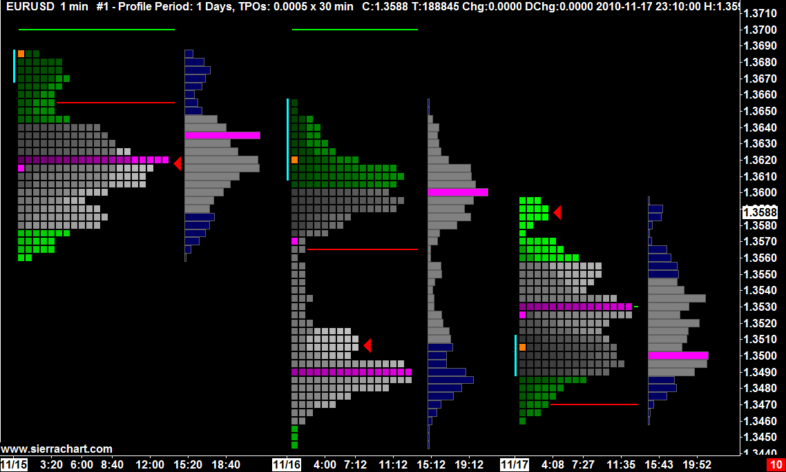
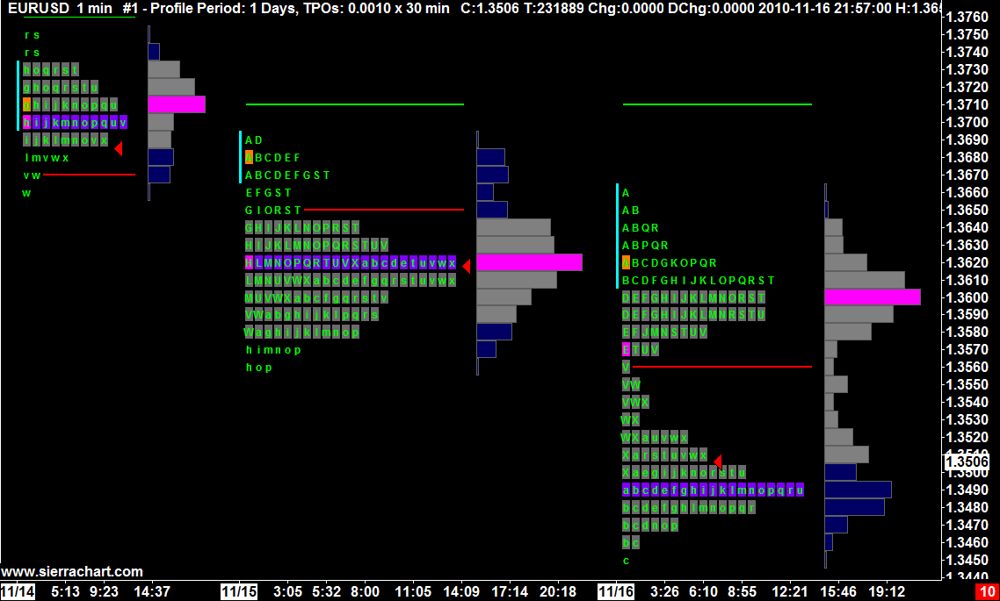
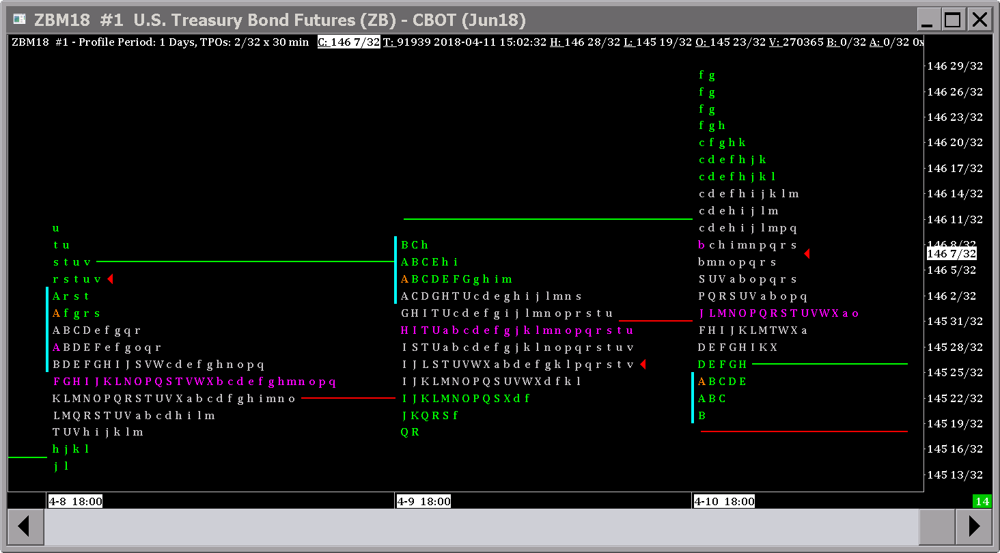
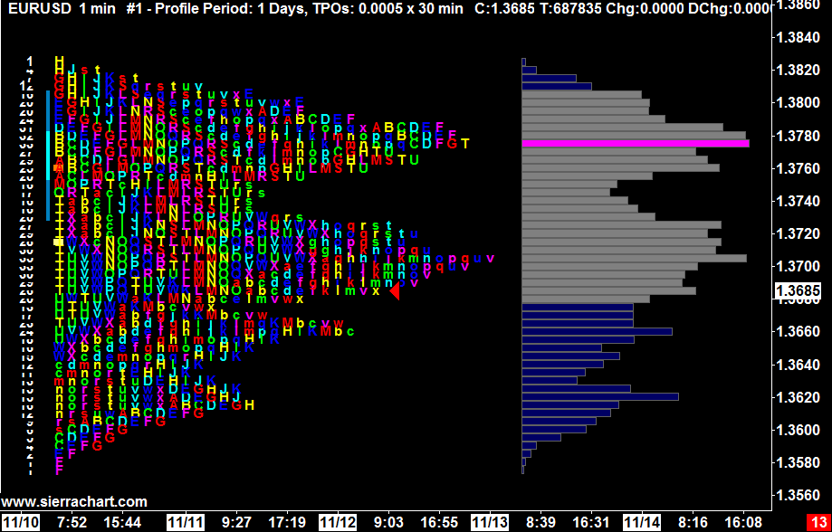
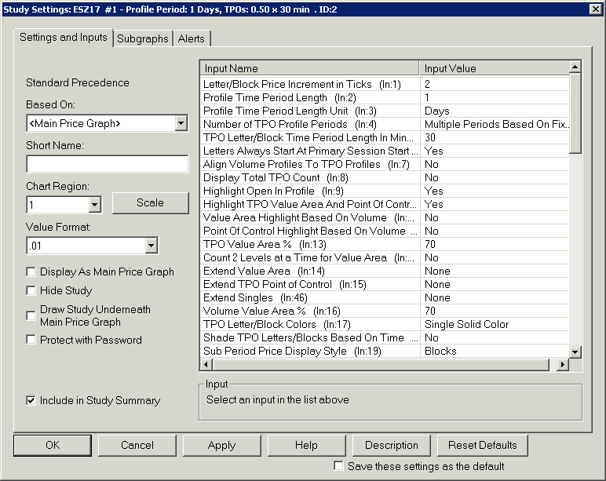
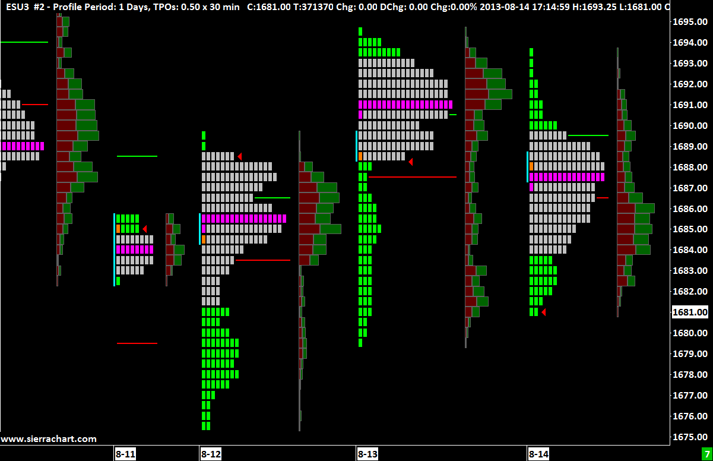
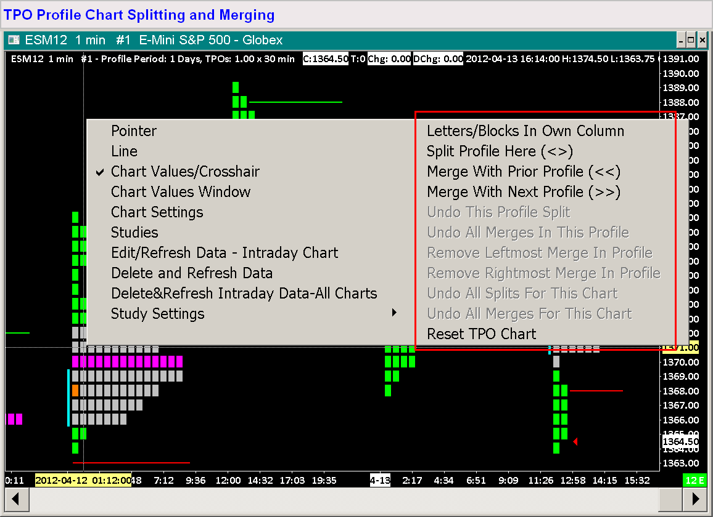
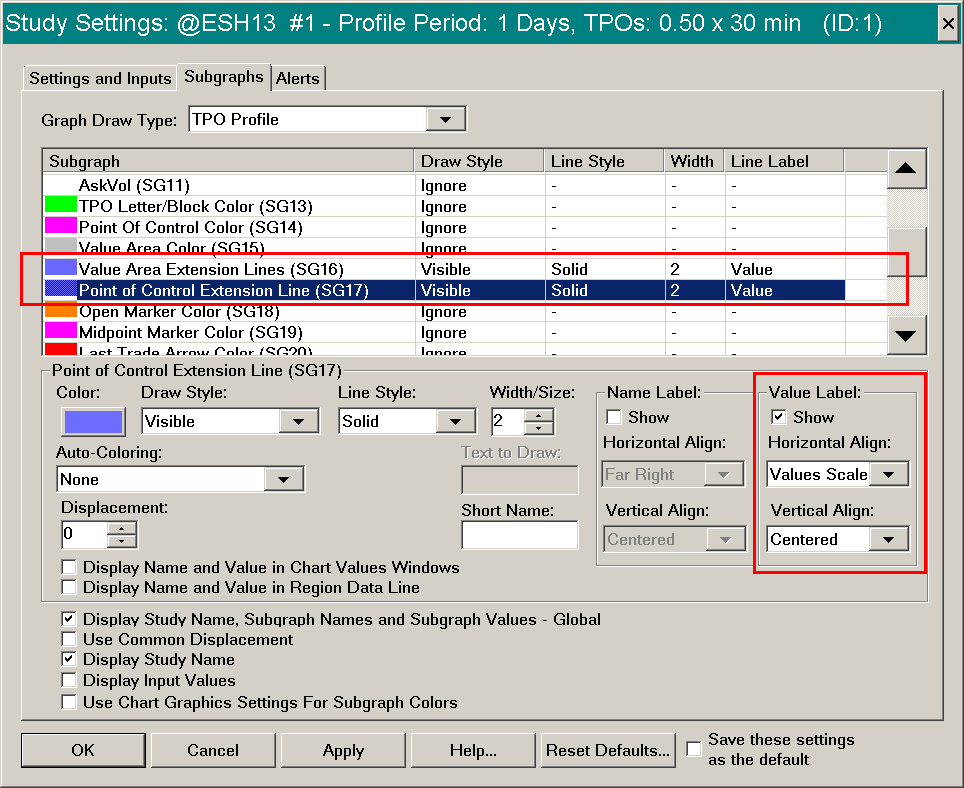
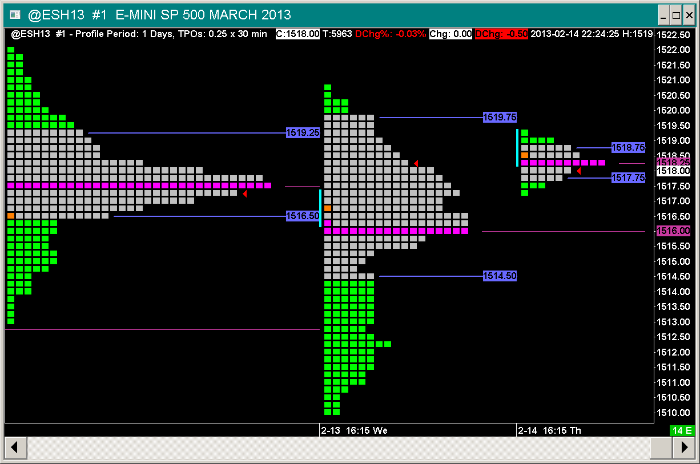
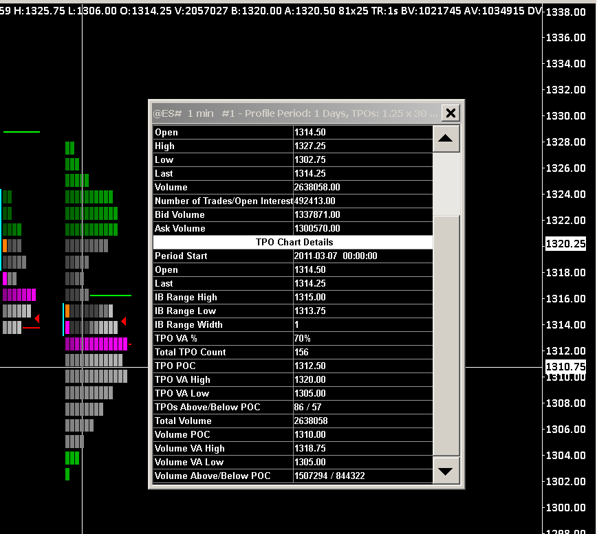

Time Price Opportunity (TPO) Profile Charts
  {kind=link}
{kind=link}
{kind=link}
- Introduction
- Basic Instructions
- Scaling the TPO Profile Chart
- How to Read TPO Profile Charts
- TPO Profile Chart Settings
- Letter/Block Price Increment in Ticks
- Profile Time Period Length
- Profile Time Period Length Unit
- Number of TPO Profile Periods
- TPO Letter/Block Time Period Length in Minutes (for Intraday Charts)
- Letters Always Start at Primary Session Start Time
- Align Volume Profiles To TPO Profiles
- Display Total TPO Count
- Highlight Open in Profile
- Highlight TPO Value Area
- Highlight TPO POC
- Value Area Highlight Based On Volume
- Point Of Control Highlight Based On Volume
- TPO Value Area %
- Color TPO Row Based on Percentage of POC Volume
- Number of POC Ranges to Color
- Count 2 Levels at a Time for Value Area
- Extend Value Area
- Extend TPO Point of Control
- Extend Singles
- Extend Poor High/Poor Low
- Profiles Used For Poor High/Poor Low
- Price Increments For Poor High/Poor Low Comparison
- Volume Value Area %
- TPO Letter/Block Colors
- Shade TPO Letters/Blocks Based on Time
- Sub Period Price Display Style
- Letter Font Size
- Percent Width For Volume Profile
- Minimum Width For Volume Profile in Bars
- New Period at Day Session Start When Using Evening Session (1 Day Period Only)
- Exclude Evening Session Profiles Except For Last Day
- Color Letters for Value Area and Point of Control Instead of Background
- Use Reverse Colors for Letters
- Highlight Open Of Each New Sub Period Within TPO Profile
- Highlight Sub Period Midpoint Letter/Block
- Highlight Midpoint in Profile
- Initial Balance Range
- IBR Extension Display Mode
- IBR 1 Extension Percentage
- Single Profile Start Date-Time
- Single Profile End Date-Time
- Number of Custom Intraday Sessions
- Custom Intraday Session# (1-5) Begin Time
- Custom Intraday Session# (1-5) End Time
- Use Custom Sub Periods 1 and 2
- Custom Sub Period 1 Start Time
- Custom Sub Period 1 End Time
- Highlight Opening Range on TPO Profiles
- Opening Range Time Length in Minutes
- Highlight Closing Range on TPO Profiles
- Closing Range Time Length in Minutes
- TPO Midpoint Calculation Method
- 30 Minute Letter/Block SubPeriod Handling
- Draw Peaks and Valleys
- Extend Peaks and Valleys
- Peaks and Valleys Sensitivity
- Include High/Low In Peaks & Valleys
- Use TPO Peaks and Valleys Sensitivity for Associated VbP
- Ignore Singles In TPOs Above/Below POC
- Letter/Block Color 1-18
- Highlight Close in Profile
- Highlight Close of Each New Sub Period Within TPO Profile
- Show Chart Values On Profile
- Show Chart Values On Last Profile Only
- Chart Values Position On Profile
- Chart Value# (1-4) To Be Displayed On Profile
- Default Column Display Style (For All Profiles)
- For Profile in Own Column and Standard Profile, Standard Profile on Left
- TPO Letter Sequence
- Highlighting the Value Area and Point of Control
- Displaying Volume Profiles
- Splitting and Merging TPO Profiles
- Keyboard Shortcuts for Splitting and Merging
- Displaying TPO Letters/Blocks for Subperiod in Own Column
- Displaying TPO Letters/Blocks for Subperiod in Own Column And Standard Profile
- Reset All Profiles To Standard Profile View
- How Point of Control and Value Area Are Calculated
- Incorrect Value Area or Point of Control Values
- TPO Chart Color and Width Settings
- TPO Letter/Block Color (SG13)
- Point of Control Color (SG14)
- Value Area Color (SG15)
- Value Area Extension Lines (SG16)
- Point of Control Extension Line (SG17)
- Open Marker Color (SG18)
- Midpoint Marker Color (SG19)
- Last Trade Arrow Color (SG20)
- Initial Balance Range Color (SG21)
- IBR Extension 1 Line Above/Below (SG22)
- IBR Extension 2 Line Above/Below (SG23)
- New Sub Period Letter/Block Highlight Color (SG24)
- Opening Range Highlight Color (SG25)
- IBR Extension 3 Line Above/Below (SG26)
- IBR Extension 4 Line Above/Below (SG27)
- Peak Color (SG28)
- Valley Color (SG29)
- Sub Period Midpoint Letter/Block Highlight (SG30)
- Singles Extension Line (SG31)
- Closing Range Highlight Color (SG35)
- Extension Line Labels
- Displaying Separate Profiles for Day and Evening Sessions
- The Effect of Letter/Block Price Increment Setting
- Setting The Time Range of Data to Display
- TPO Letter Codes and Letter Customization
- Viewing TPO Profile Text Information
- Using Other Studies on a TPO Chart
- Resolving Differences Between TPO Profile Charts
- Example Images
- Resolving Missing TPO Letters/Blocks For Certain Time Periods
- Programmatically Accessing TPO Values
- Chart Column Values
- Volume on TPO and Volume Profiles
Introduction
Welcome to the Sierra Chart TPO Profile Chart study. This is a very powerful and interactive study which provides you a completely new method of performing market analysis. TPO stands for Time Price Opportunity.
By using a TPO chart, you are able to analyze the amount of trading activity, based on time, for each price level the market traded at for any given time period.
The TPO Profile Chart study allows you to clearly see the areas where the market is trading at most of the time.
The TPO Profile Chart study identifies the Point of Control which is the price level where most of the trading is occurring timewise and the surrounding Value Area.
The TPO Profile Chart study can be used on its own or it can be combined with the Volume by Price study.
You have the ability to merge together and split apart TPO profiles for each period of time.
A TPO letter or block represents trading for a specific time block at a specific price. To the right is an example of a TPO Profile Chart with a Volume by Price study as well.
TPO charts are also known as Market Profile charts. In Sierra Chart they are called TPO Charts.
When using the TPO Profile Chart study, it is essential that the Tick Size under Chart >> Chart Settings is set correctly. Otherwise, TPO profiles may not display correctly and may take a long time to load and calculate.
Basic Instructions
TPO Profile Charts are added through the Chart Studies window. To create a basic TPO Profile Chart, follow these steps:
- You will need to be on Sierra Chart Advanced Service Package (5) to use the TPO Profile Chart study.
To change your Sierra Chart service package, select Help >> Account Control Panel on the menu. Click on the Set Service Package For Renewal link on the displayed webpage and follow the instructions to set the Usage Time Service Package to Advanced (5). - Go to or open an Intraday or Historical Chart. A chart can be open through File >> Find Symbol.
- Select Chart >> Chart Settings. Confirm the Tick Size and Price Display Format are set correctly. To automatically set these, press the Apply Global Symbol Settings button. Press OK.
- Select Analysis >> Studies on the menu.
- In the Studies Available list, select the TPO Profile Chart study.
- Press the Add >> button.
- To configure the TPO Profile Chart, select the TPO Profile Chart study in the Studies to Graph list box, and press the Settings button.
- Select the Settings and Inputs tab. Set the Value Format to the format required by the symbol of the chart. Normally this should be set to Inherited and should not be changed.
- On the Settings and Inputs tab, you will see a list of inputs for the TPO Profile Chart study.
- Set the Letter/Block Price Increment in Ticks Input to the number of price Ticks that you want each Letter/Block to include. If this is set to 0, then it will be automatically set.
This must be be set correctly for proper TPO Profiles. Otherwise, you may see a single row of letters or too many rows of letters that overlap. In the case of the Forex markets, avoid setting the Letter/Block Price Increment in Ticks to 1. The smaller the Price Increment, the more calculations that are involved and you potentially could hurt performance significantly if the setting is not correct.
For more information on how to set this Input, refer to the Letter/Block Price Increment in Ticks description. - Modify other study Inputs as you require. If you want the TPOs to be displayed as Letters rather than Blocks, then set the Sub Period Price Display Style Input to Letters.
- In the case of when you are applying the TPO Profile Chart study to an Intraday chart, you will need to set the TPO Letter/Block Time Length in Minutes Input. The default is 30 Minutes. For Historical Daily charts, setting this is not necessary. It automatically defaults internally to 1 Day or 1 Month depending upon the time period of the TPO Profiles.
When using the TPO Profile Chart study, there is no need to change the timeframe of the underlying bars of the chart. In the case of Intraday charts they will be set to 1 Minute and cannot be changed. In the case of Historical charts, the timeframe of the underlying bars of the chart is 1 Day per bar. For Intraday charts, you control the time length of the Letters/Blocks with the TPO Letter/Block Time Length in Minutes Input. - By default the time period of TPO Profiles for Intraday charts is 1 Day. To set them to 1 Week, set the Profile Time Period Length Unit Input to Weeks. Also adjust the related Profile Time Period Length Input as needed.
- Select the Subgraphs tab on the Study Settings window. On this tab you can change the Colors of various elements of the TPO Profile Chart. There are specific Subgraphs for specific elements of a profile. The first relevant Subgraph is SG14. For complete information, see the TPO Chart Color and Width Settings section.
- Press OK to close the Study Settings window. Press OK to close the Chart Studies window.
- For information about adjusting the scaling of a TPO chart, refer to the Scaling the TPO Profile Chart section.
- For more information about adding and configuring Chart Studies, refer to the Chart Studies documentation page.
Scaling the TPO Profile Chart
Changing the Scale
- Bar Spacing: The bar spacing controls the spacing between periods. A period contains a single TPO Profile. For instructions to change the bar spacing, refer to the Changing Spacing documentation. For example, if 2 TPO Profile periods on a chart are too close together and are overlapping each other, you would want to increase the bar spacing. If 2 TPO Profile periods are too far apart and you want to see them side by side, you would decrease the bar spacing until they are next to each other visually.
- Price Scale: The price scale controls the distance between prices vertically and also the position of the vertical price scale for the traded prices. The price scale is the list of prices located on the right of the chart. By changing the vertical price scale, you can alter the view in order to get a clear display or move prices that are not in view into view. There are two methods to change the price scale. You can expand or contract the prices (Interactive Scale Range) and you can also move the chart up and down (Interactive Scale Move). This is accomplished by clicking and dragging with your mouse pointer on the scale numbers on the right side of the chart. You can choose between the two different interactive scaling modes by right clicking with your mouse pointer on the scale numbers on the right side of the chart. For complete instructions, see the Interactive Scaling documentation.
- Resetting the Vertical Scale to Default: To reset the vertical scale to the default, select Chart >> Reset Scale.
Solving Overlapping TPO Letters
{kind=link}
Overlapping Letters: If the TPO letters are too close and are overlapping each other, the letters may only be partially visible (see image to the right). There are several solutions:
- Increase the Letter/Block Price Increment in Ticks Input to include a wider range of prices for each TPO letter. This specifies the number of ticks set by the Tick Size setting in Chart >> Chart Settings.
For example, if the Tick Size is .25 and this Input is set to 4, then the Price Increment will be 1.0. For more information about this setting, refer to the TPO Profile Chart Settings section. - Expand the price scale range by using the Interactive Scale Range feature as explained in the Scaling the TPO Profile Chart section.
- Use a smaller Letter Font Size Input setting. For more information about this setting, refer to the Letter Font Size section.
- Set the Letter Font Size Input setting to 0 to make the size setting automatic.
How to Read TPO Profile Charts
Below is an image of a TPO Profile and a Volume Profile with numbers identifying various elements.
{kind=link}
Elements of TPO and Volume Profiles
- Time Price Opportunities. These are known as TPOs for short. These are displayed as alphabetic letters or blocks. Therefore, each individual letter or block is considered a TPO.
- The TPO Count for Each Price Increment is displayed as a number to the left of each row in the TPO profile for a period.
It is possible for a particular price level within a TPO profile or subperiod to have a TPO count of 0 if there was no trading at that price level. - The Initial Balance Range (IBR) is displayed as a vertical line to the left of the TPO Letters/Blocks which represents the price range of the Initial Balance.
The Initial Balance Range Input setting specifies the number of TPO Profile sub periods which makes up the initial balance range.
If the Initial Balance Range Input is set to 2, the Initial Balance Range will be the price range of the first 2 sub periods for every TPO Profile. If Letter/Block Time Period Length In Minutes is set to 30, then the Initial Balance Range will be a time period of 1 hour.
The Initial Balance Range is displayed as a vertical bar to the left of each TPO Profile. - The Opening Price for a TPO Profile for a time period is displayed as a highlighted block or letter. Refer to TPO Chart Color and Width Settings to set the color. The color is set with Open Marker Color (Subgraph 18).
- The TPO Midpoint for a TPO Profile for a time period is displayed as a highlighted block or letter directly on the TPO Profile.
There are two possible calculation methods. For the calculation method descriptions, refer to the TPO Midpoint Calculation Method Input setting description.
Refer to TPO Chart Color and Width Settings section for information about setting the color for the TPO Midpoint.
This highlighting can be enabled or disabled through the Highlight Midpoint in Profile study Input setting. - The Last Trade Price for a TPO Profile for a time period is displayed as an arrow pointing towards the right. To change the color, refer to the TPO Chart Color and Width Settings section (Last Trade Arrow Color (SG20)).
The size of the arrow is controlled by the chart Font Size. It is based upon that size. To change the Font Size, refer to Graphics Settings. - The TPO Point of Control (POC) is displayed as highlighted letters or blocks indicating the price level of the Point of Control. For how the Point of Control is calculated, refer to the How Technical Values are Calculated section.
- The TPO Value Area (VA) is displayed as highlighted letters or blocks indicating the Value Area of the profile. The Value Area encompasses the TPOs that are a given % (the default is 70%) around the Point of Control. For how the Value Area is calculated, refer to the How Technical Values are Calculated section.
- The TPO Value Area (VA) upper and lower prices can be extended as horizontal lines until the end of the period.
- These are the vertical Initial Balance Range (IBR) Extension lines. The IBR Extension Display Mode Input setting allows the 4 IBR extensions to be drawn as vertical bars on the left of the profile (as shown in the image), horizontal bars on the right side of the profile, or both.
The IBR 1-4 Extension Percentage inputs set the percentage for each of the 4 Initial Balance Range extensions. For more information, refer to the TPO Profile Chart Settings. For any extension that you do not want to display, set the corresponding Percentage Input to 0.
To change the color of the extensions, refer to the TPO Chart Color and Width Settings section. - These are the horizontal Initial Balance Range (IBR) Extension lines. The IBR Extension Display Mode Input setting allows the 4 IBR extensions to be drawn as vertical bars on the left of the profile, horizontal bars on the right side of the profile (as shown in the image), or both.
The IBR 1-4 Extension Percentage inputs set the percentage for each of the 4 Initial Balance Range extension lines. For more information, refer to the TPO Profile Chart Settings. For any extension line that you do not want to display, set the corresponding Percentage Input to 0.
To change the colors or line width, refer to the TPO Chart Color and Width Settings section. - Same as 11 at a different percentage value.
- This is the Volume Profile. You will need to add the Volume by Price study to see the Volume Profiles. For additional information, refer to the Displaying Volume Profiles section.
- This is the Volume Point of Control.
- This is the Volume Value Area.
Viewing Basic Profile Settings
The highlighted box in this image shows the Time Period of each profile and the Price Increment and the Time Period of each letter/block.
{kind=link}
TPO Profile Chart Settings
{kind=link}
The Sierra Chart TPO Profile Chart study is very versatile and can be configured in many ways. If you wish to use the same or similar configuration on other charts, you can save your configuration by saving the study as part of a Study Collections.
- To view and modify the settings for the TPO Profile Chart study, select Analysis >> Studies on the menu.
- If the TPO Profile Chart study has not been added to the chart, then Add it. Select TPO Profile Chart study in the Studies to Graph list on the Chart Studies window.
- Press the Settings button.
- Select the Input and Settings tab. Below is a complete list of all the TPO Profile Chart settings.
Letter/Block Price Increment in Ticks
The Letter/Block Price Increment in Ticks Input specifies the grouping of prices. The Price Increment can be as small as 1 which will mean 1 tick. For example, if a given time period has a price range from 1110.5 to 1114 and a Tick Size of .25, a Price Increment of 4 (equivalent to a value of 1.0 = 4*.25) would group prices into 4 groups: 1111, 1112, 1113, 1114.
The price group for 1111 would include the range from 1110.5 to 1111.25. While a Price Increment of 2 would group prices into 8 groups, 1110.5, 1111, 1111.5, 1112, 1112.5, 1113, 1113.5, 1114. The price group for 1110.5 would include the range from 1110.25 to 1110.5 (also assuming a Tick Size of 0.25).
Profile Time Period Length
This is the number of units that are used with the Profile Time Period Length Unit to determine the time period for the TPO Profile. Refer to Profile Time Period Length Unit.
For example, if you want a TPO Profile period of 1 Day, then set Profile Time Period Length Unit to Days and set Profile Time Period Length to 1.
Profile Time Period Length Unit
The Profile Time Period Length and Profile Time Period Length Unit study Inputs are used together to control the time period of each Profile within a TPO Profile Chart. A profile consists of a group of TPO Letters or Blocks for the specified period of time.
For example, if you want a TPO Profile period of 1 Day, then set Profile Time Period Length Unit to Days , and set Profile Time Period Length to 1.
If you are using a Historical Chart (Chart >> Chart Settings >> Chart Data Type), the Time Period Length Unit needs to be Months or Years and will be automatically adjusted if necessary. For other settings, you need to change the Chart Data Type to Intraday Chart.
Number of TPO Profile Periods
This Input specifies whether there are multiple TPO Profiles or a single TPO Profile in the chart.
The following are the choices:
- Multiple Periods Based On Fixed Time: For all the data loaded in the chart, this will create TPO Profiles of the time length specified by the Profile Time Period Length and Profile Time Period Type Inputs.
- One Period Of Fixed Time Length At End: This will create a single TPO Profile using the data at the end of the chart. The time length of the TPO Profile is specified by the Profile Time Period Length and Profile Time Period Type Inputs.
- From Start Date-Time To End: This will create a single TPO Profile which starts at the Single Profile Start Date-Time Input and goes to the most recent time at the end of the chart.
- From Start Date-Time + Time Length: This will create a single TPO Profile from the starting Date-Time specified by the Single Profile Start Date-Time Input. The profile time length is specified by the Profile Time Period Length and Profile Time Period Type Inputs.
- From Start Date-Time To End Date-Time: This will create a single TPO Profile from the starting Date-Time specified by the Single Profile Start Date-Time Input, to the ending Date-Time specified by the Single Profile End Date-Time Input.
TPO Letter/Block Time Period Length in Minutes (for Intraday Charts)
This Input specifies the time period length of a TPO letter or block within the larger TPO profile for a period of time. The default is 30 minutes.
This setting applies when the Time Period Type is Minutes, Days, Weeks, or Months.
This Time Period Length is also known as the Sub Period time length. Each block/letter corresponds to one sub-period. The maximum length is 1440 minutes. This setting only applies to Intraday charts.
In the case when using this study with Historical Daily chart data, which is controlled through the Chart >> Chart Settings >> Chart Data Type setting, then this is automatically set to 1440 minutes, which is equal to 1 day.
When the Profile period is 1 Year, then the Letter/Block Time Period is 1 month and cannot be changed.
Letters Always Start at Primary Session Start Time
When this Input is set to Yes, the first letter, usually letter A, of the currently defined TPO Letters will start at the primary session Start Time.
Align Volume Profiles To TPO Profiles
When this Input is set to Yes and the Volume by Price study has been added to the chart, then the left edge of the Volume Profile will be aligned to the left edge of the TPO Profile.
Therefore, the two profiles will overlap each other.
The Volume Profile will be displayed behind the TPO Profile if the Volume by Price study is listed first in the Studies to Graph list box on the Chart Studies window. Otherwise, if the TPO Profile study is listed first, then the Volume Profile will be in front of the TPO Profile.
Display Total TPO Count
When this input is set to Yes the Total TPO Count for each bar will appear to the left of the TPO Chart.
Highlight Open in Profile
When this Input is set to Yes, the study will highlight the Opening price in each TPO Profile.
Highlight TPO Value Area
When this Input is set to Yes, then the Value Area (VA) section of each displayed TPO Profile will be colored the specified color.
When separate Day and Evening profiles are displayed, and the Input for TPO Letter/Block Coloring is set to Separate Colors for Day and Evening Sessions, then the TPO Value Area can be colored differently for the Day Session (Primary Color) and the Evening Session (Secondary Color).
To change the color, refer to the TPO Chart Color and Width Settings section.
When TPOs are displayed as letters, either the background can be colored, or the TPO letters themselves can be colored. When Color Letters For Value Area And Point Of Control Instead Of Background is set to Yes, the letters are colored. When it is set to No, the background behind the letters is colored.
Highlight TPO POC
When this Input is set to Yes, then the Point of Control (POC) of each displayed TPO Profile will be colored the specified color.
To change the color, refer to the TPO Chart Color and Width Settings section.
When TPOs are displayed as letters, either the background can be colored, or the TPO letters themselves can be colored. When Color Letters For Value Area And Point Of Control Instead Of Background is set to Yes, the letters are colored. When it is set to No, the background behind the letters is colored.
Value Area Highlight Based On Volume
When this Input is set to Yes, the Value Area section of each TPO profile is colored based upon the Volume Profile Value Area rather than the TPO Profile itself. This Input only applies if Highlight TPO Value Area And Point Of Control is set to Yes.
When this Input is set to Yes, the Value Area percentage is set by the Volume Value Area % Input.
Point Of Control Highlight Based On Volume
When this Input is set to Yes, the Point of Control row of each TPO profile is colored based upon the Volume Profile Point of Control rather than the TPO Profile itself. This Input only applies if Highlight TPO Value Area And Point Of Control is set to Yes.
TPO Value Area %
This Input sets the percentage of the TPO Profile which makes up the Value Area when the Value Area Highlight Based on Volume is set to No.
Color TPO Row Based on Percentage of POC Volume
When this Input setting is set to Yes, each TPO row in a Profile is colored based upon the its percentage relative to the Point of Control based on volume.
The first 10 color settings named Letter/Block Colors 1 - 10 in the list of Inputs control the colors based on the percentage of the TPO row relative to the Point of Control. The Letter/Block Color 1 is used to color the TPO rows which fall within 0% - 10% of the POC, Letter/Block Color 2 is used to highlight the TPO rows which fall within 10% - 20% of the POC and so on.
The percentage of POC to color is set using the input Number Of POC Ranges To Color.
The input settings Highlight Open In Profile, Highlight TPO POC takes precedence over this input. However, this setting takes precedence over the other input settings such as Highlight Midpoint in Profile, Highlight Open Of Each New Sub Period Within TPO Profile, Highlight TPO Value Area, Highlight Close in Profile, Highlight Close of Each New Sub Period Within TPO Profile and TPO Letter/Block Colors.
When TPOs are displayed as letters, either the background can be colored, or the TPO letters themselves can be colored. When Color Letters For Value Area And Point Of Control Instead Of Background is set to Yes, the letters are colored. When it is set to No, the background behind the letters is colored.
Number of POC Ranges to Color
The default for this Input is 10. This means that all 10 Letter/Block Colors 1 - 10 Input settings are used to color all of the letters/blocks of the TPO profile. If this is set to 1, then only the 90% - 100% Letter/Block Colors 10 is used. The remaining rows that do not meet this condition use coloring based upon the other Input and Subgraph settings like the Highlight Open In Profile, Highlight Midpoint in Profile, Highlight Open Of Each New Sub Period Within TPO Profile, Highlight TPO Value Area, Highlight TPO POC, Highlight Close in Profile, Highlight Close of Each New Sub Period Within TPO Profile and TPO Letter/Block Colors Input.
The higher the number for the Number of POC Ranges to Color Input, the more Letter/Block Colors 1-10 Input Settings are used.
Count 2 Levels at a Time for Value Area
When this input is set to Yes, the calculation for the Value Area uses every other level, rather than looking at every level. Refer to How Point of Control and Value Area are Calculated for more information.
Extend Value Area
When set to a value other than None a horizontal line is drawn at the Value Area High and Value Area Low levels and is extended based on the chosen setting below.
- None: The Value Area High/Low Extension Lines are not displayed.
- End of Period: The Value Area High/Low Lines are extended to the right to the last chart column reserved for the TPO Profile.
- End Of Window: The Value Area High/Low Lines are extended to the right edge of the chart window.
- Until Future Intersection: The Value Area High/Low Lines are extended until it is intersected by future prices.
Extend TPO Point of Control
When set to a value other than None a horizontal line is drawn at the Point of Control level and is extended based on the chosen setting below.
- None: The Point of Control line is not displayed.
- End Of Period: The Point of Control line is extended to the last chart column reserved for the profile.
- End Of Window: The Point of Control line is extended to the right edge of the chart window.
- Until Future Intersection: The Point of Control line is extended until it is intersected by future prices.
Extend Singles
Singles are defined as the first TPO within a sub-period that exceeds the high or low of all of the prior TPOs within a TPO profile, so long as all of the TPOs of the following sub-period remain beyond the price level of the single. For example, if a new TPO becomes the new highest price level for the TPO profile, and all of the following TPOs remain higher than that price level, then that new TPO is considered a single.
However, if a TPO within the following sub-period is created at the same price level or lower than that new TPO, then it is not considered a single.
Singles will only be identified within sub-periods that have both a preceding and following sub-period for comparison. Therefore, no singles will be identified within either the first sub-period or the last sub-period of a TPO profile. It is possible that a single will initially be identified, but later retracted, if the following sub-period is appended to have a TPO that intersects with the previously identified single. Therefore, a single cannot be fully confirmed until the sub-period following the single has closed.
The best way to visually observe where singles occur in a particular TPO Profile, is to right-click on that TPO Profile and select Letter/blocks In Own Column.
To view singles using the TPO Profile Chart study, set the Input for Extend Singles to a value other than None. This will display the price levels of the singles as horizontal extension lines. These extension lines will use the settings of the Singles Extension Line subgraph. The following defines the extension options available for this setting.
- None: The Singles Extension lines are not displayed.
- End of Period: The Singles Extension lines are extended to the last chart column reserved for the profile.
- End of Window: The Singles Extension lines are extended to the right edge of the chart window.
- Until Future Intersection: The Singles Extension lines are extended until it is intersected by future prices. Note that with this setting it is possible that some singles may occur and be intersected within the same TPO profile. In this case, there will be no visual indication for those singles unless the TPO profile is set to Letters/Blocks In Own Column.
Extend Poor High/Poor Low
Poor Highs are described as occuring when a TPO high is equal to a previous TPO high. The TPO high values are compared between the different subperiods within a TPO profile and between entire TPO profiles.
Poor Lows are described as occuring when a TPO low is equal to a previous TPO low. The TPO low values are compared between the different subperiods within a TPO profile and between entire TPO profiles.
When Price Increments for Poor High/Poor Low Comparison is set to a value greater than zero, then a poor high/low is also considered when the high/low is +/- the specified number of price increments as compared to the previous TPO high/low.
To view poor high and poor low using the TPO Profile Chart study, set the Input for Extend Poor High/Poor Low to a value other than None.
In this case, this will display the price levels of the poor highs/poor lows as horizontal extension lines. These extension lines will use the settings of the Poor High/Poor Low Extension Line Subgraph where the primary color will be used to display Poor High and the secondary color will be used to display Poor Low.
The following defines the extension options available for this setting.
- None: The Poor Highs/Poor Lows Extension lines are not displayed.
- End of Period: The Poor Highs/Poor Lows Extension lines are extended to the last chart column reserved for the profile.
- End of Window: The Poor Highs/Poor Lows Extension lines are extended to the right edge of the chart window.
- Until Future Intersection: The Poor Highs/Poor Lows Extension lines are extended until a line is intersected by future prices. Note that with this setting it is possible that some Poor Highs/Poor Lows may occur and be intersected within the same TPO profile. In this case, there will be no visual indication for those Poor Highs/Poor Lows unless the TPO profile is set to Letters/Blocks In Own Column.
Profiles Used For Poor High/Poor Low
This setting determines the profiles used to calculate Poor High/Low and has the following options:
- Within Same Profile and To Prior Profile: When this option is selected, the subperiods within the same profile are compared and the current TPO Profile's high/low is compared with the prior TPO Profile's high/low to determine if there is a Poor High/Poor Low.
- Within Same Profile: When this option is selected, only the subperiods within the same TPO Profile are compared to determine if there is a Poor High/Poor Low.
- To Prior Profile: When this option is selected, the current TPO Profile's high/low is compared with only prior TPO Profile's high/low to determine if there is a Poor High/Poor Low.
Price Increments For Poor High/Poor Low Comparison
The Price Increments For Poor High/Poor Low Comparison Input specifies the number of price increments to use for comparison to define Poor High/Poor Low.
Note that this Input value specifies the number of Letter/Block Price Increment in Ticks.
For example, if this value is set to 0, then a profile with 2 equal TPO highs is marked as Poor High. If this value is set to 1, then a profile with 2 TPO highs which are equal or differ by 1 price increment is marked as Poor High.
Volume Value Area %
This Input sets the percentage of the Volume Profile which makes up the Value Area when the Value Area Highlight Based on Volume is set to Yes.
TPO Letter/Block Colors
This setting defines how the Letters or Blocks are colored. The following options are available.
- Single Color: All of the TPO letters or blocks are a single color as specified by the TPO Letter/Block Color Subgraph (SG13) color setting. For more information about this Subgraph, refer to the TPO Chart Color and Width Settings section.
- Use Letter/Block Color 1-18: TPO letters or blocks will be colored using the Letter/Block Color 1-18 color Input settings. There are 18 of these colors and they will be iterated through as needed for each subperiod of a TPO profile. If there are more than 18 subperiods within a TPO Profile, then the use of these colors will repeat from the beginning.
- Use Letter/Block Color 1-18 for Periods: Each TPO Profile for a period will be colored using the Letter/Block Color 1-18 color Input settings. There are 18 of these colors and they will be iterated through as needed for each TPO Profile within the chart. If there are more than 18 TPO Profiles within a chart, then the use of these colors will repeat from the beginning.
- Use Letter/Block Color 1-18 for Days of Week: TPO letters or blocks will be colored using the Letter/Block Color 1-18 color Input setting for each day of the week starting on the defined beginning of the week. Therefore, the first day of the week will use Letter/Block Color 1, the second day of the week will use Letter/Block Color 2, and so on.
- Separate Colors for Day and Evening Sessions: TPO and Value Area letters or blocks will be colored using the Primary Subgraph Color for the Day session and will be colored the Secondary Subgraph Color for the Evening session.
For instructions to display separate Day and Evening Session Profiles, refer to Displaying Separate Profiles for Day and Evening Sessions.
The Primary and Secondary Subgraph colors for the TPO Letters or Blocks are set with the TPO Letter/Block Color (SG13) Subgraph.
The Primary and Secondary Subgraph colors for the Value Area Letters or Blocks are set with the Value Area Color (SG15) Subgraph.
Shade TPO Letters/Blocks Based on Time
When this Input is set to Yes, then the TPO letters or blocks will have a different shade of their color, based upon the time from the beginning of the period that the letter or block represents. For example, if the TPO Profile has a period of 1 Day, and the letters and blocks have a time period length of 30 min., then the letters/blocks at the beginning of the period will have a darker or less bright appearance and the letters/blocks near the end of the period will have a brighter appearance. This visually helps to identify where in the overall period of the profile that the letter/block is located timewise.
Sub Period Price Display Style
This setting defines the display style of the individual prices within a subperiod of the overall TPO Profile. In other words, the display style of the TPOs themselves. The following options are available.
- Blocks: When this option is selected, each TPO will be displayed as a solid block rather than a letter.
-
Letters: When this option is selected instead of the TPOs displayed as Blocks, each TPO will be displayed as a letter using letters of the standard English alphabet. For additional information, refer to the TPO Letter Codes and Letter Customization section.
The Font Size of the letters is controlled with the Letter Font Size Input. - Horizontal Bars: When this option is selected, then a row of TPOs will be displayed as a solid horizontal bar. Horizontal Bars is limited with display functionality but it is extremely CPU efficient.
Letter Font Size
This Input specifies the font size in Points, of each TPO letter in a TPO Profile. Reduce the Font Size to make the letters smaller if the letters are overlapping each other or if they are too large.
If the letters are overlapping, you can also increase the Letter/Block Price Increment in Ticks Input setting.
When this Input is set to zero (0), the font size is automatically scaled to fit within the available spacing between the TPO rows in the Profile.
Percent Width For Volume Profile
When using the Volume by Price study on a TPO Profile Chart, then this Input specifies the width of the Volume Profile as a percentage relative to the TPO Profile.
If this is set to 100%, then the Volume Profile will have the same width as the TPO Profile.
This Input can be set to be greater than 100% to make a Volume Profile wider than a TPO Profile.
Minimum Width For Volume Profile in Bars
When using the Volume by Price study on a TPO Profile Chart, then this Input specifies the minimum width of the Volume Profile as a number of chart bars.
This is useful when a Volume Profile is forming near the beginning of the trading session and there are a small number of chart bars used for the corresponding TPO Profile.
New Period at Day Session Start When Using Evening Session (1 Day Period Only)
When this Input is set to Yes, you have enabled Use Evening Session in Chart >> Chart Settings and set the Evening Start and Evening End times for an Intraday chart, Profile Time Period Length Unit is set to Days, and Profile Time Period Length is set to 1, a separate TPO Profile and also a Volume Profile, if you are using the Volume by Price study, will be displayed for both the Day Session and the Evening Session.
Normally there will be one profile that starts at the Evening Session time. When this Input is set to Yes, then at the Day Session Start Time a new TPO Profile will begin.
Exclude Evening Session Profiles Except For Last Day
When this Input is set to Yes and the Session Times in Chart >> Chart Settings have Use Evening Session enabled and have set the Evening Start and Evening End times, then evening session data is filtered out other than for the last trading day in the chart.
However, as the chart updates in real time and new days are added, the evening session data is not removed from past days. To cause the prior evening TPO Profiles to be removed, go to the chart and select Chart >> Recalculate. A Control Bar button can be added for this menu command.
Color Letters for Value Area and Point of Control Instead of Background
This Input only applies when Highlight TPO Value Area And Point Of Control is set to Yes.
When this Input is set to Yes, the TPO letters at the price levels of the Value Area and Point of Control are colored themselves rather than the background at the price levels of the Value Area and Point of Control.
Use Reverse Colors for Letters
When this Input is set to Yes, the foreground color for a letter will be the chart background color and the background color for a letter will be what was specified for the text foreground based on the coloring logic for the letter.
Highlight Open Of Each New Sub Period Within TPO Profile
Set this Input to Yes to highlight the opening letter or block of each new sub period within a TPO profile with a different color. The time length of a sub period is set with the TPO Letter/Block Time Period Length in Minutes Input.
The color is set with the New Sub Period Letter/Block Highlight Color (SG24) color setting.
Highlight Sub Period Midpoint Letter/Block
Set this Input to Yes to highlight the midpoint letter or block of each sub period within a TPO profile. The time length of a subperiod is set with the TPO Letter/Block Time Period Length in Minutes Input.
The TPO letter or block will be colored according to the Sub Period Midpoint Letter Block Highlight (SG30) color setting.
There are two different calculation methods. Refer to TPO Midpoint Calculation Method.
Highlight Midpoint in Profile
Set this Input to Yes to highlight the midpoint in TPO profiles.
There are two different calculation methods. Refer to TPO Midpoint Calculation Method.
For a description of the TPO profile midpoint, refer to the How to Read TPO Profile Charts section.
Initial Balance Range
The Initial Balance Range Input setting sets the number of sub periods, which is set with the Letter/Block Time Period Length In Minutes Input, within a TPO Profile for a period, that the Initial Balance Range represents.
For example, if this value is 2, the Initial Balance Range will be the price range of the first 2 sub periods for every TPO Profile. If Letter/Block Time Period Length In Minutes is set to 30, then the Initial Balance Range will be a time period of 1 hour.
The Initial Balance Range is displayed as a vertical bar to the left of the TPO Profile. Refer to How to Read TPO Profile Charts.
IBR Extension Display Mode
This input defines how the extended Initial Balance Range is displayed. The Initial Balance Range of a TPO Profile can display up to four configurable percentage extensions. The percentages are specified using the IBR 1-4 Extension Percentage inputs. 0% means that there is no extension.
The extensions can be drawn as an extension to the Initial Balance Range vertical bar on the left of the TPO Profile, pairs of horizontal lines on the right of the TPO Profile, neither, or both.
When using the Vertical Bar option, the extension amount displayed is the largest value of the four Initial Balance Range Extension Percentages.
For information about changing the color of the Initial Balance Range Extensions, refer to the TPO Chart Color and Width Settings section.
IBR 1 Extension Percentage
This Input sets the first percentage amount that the Initial Balance Range is extended. When set to zero, the extension is disabled.
To have an extension line for the base Initial Balance Range, requires that you use a small percentage like 1.
IBR 2 Extension Percentage
This Input sets the second percentage amount that the Initial Balance Range is extended. When set to zero, the extension is disabled.
IBR 3 Extension Percentage
This Input sets the third percentage amount that the Initial Balance Range is extended. When set to zero, the extension is disabled.
IBR 4 Extension Percentage
This Input sets the fourth percentage amount that the Initial Balance Range is extended. When set to zero, the extension is disabled.
Single Profile Start Date-Time
For TPO charts that consist of a single TPO profile, this Input sets the starting Date-Time.
Single Profile End Date-Time
For TPO charts that consist of a single TPO profile, this Input sets the ending Date-Time.
Number of Custom Intraday Sessions
This Input is used to set the number of custom sessions per day for the TPO profile. The maximum custom sessions allowed is 5. The inputs Custom Intraday Session# (1-5) Begin Time and Custom Intraday Session# (1-5) End Time should also be set according to the number set here.
Note that this input is valid only when the Profile Time Period Length Unit is set to 1 and Profile Time Period Length is set to Days.
Custom Intraday Session# (1-5) Begin Time
This Input sets the begin time for the custom intraday sessions. This Input only applies when Number of Custom Intraday Sessions is set to a value greater than 0.
For example, if the Number of Custom Intraday Sessions is set to 3, there will be 3 intraday sessions for 1 Day and Custom Intraday Session# (1-3) Begin Time will be used as the begin time for the 3 sessions.
If there is an overlap between the Custom Intraday Session# (1-5) End Time of one session and the Custom Intraday Session# (1-5) Begin Time of next session, then the end time of that session will be changed to remove the overlap.
If there is more than 1 second difference between Custom Intraday Session# (1-5) End Time of one session and the Custom Intraday Session# (1-5) Begin Time of next session, then the end time of that session will be changed to end 1 second before the next session's start time.
Custom Intraday Session# (1-5) End Time
This Input sets the end time for the custom intraday sessions. It needs to be 1 second before the begin time of next session. This Input only applies when Number of Custom Intraday Sessions is set to a value greater than 0.
For example, if the Number of Custom Intraday Sessions is set to 3, there will be 3 intraday sessions for 1 Day and Custom Intraday Session# (1-3) End Time will be used as the end time for the 3 sessions.
If there is an overlap between the Custom Intraday Session# (1-5) End Time of one session and the Custom Intraday Session# (1-5) Begin Time of next session, then the end time of that session will be changed to remove the overlap.
If there is more than 1 second difference between Custom Intraday Session# (1-5) End Time of one session and the Custom Intraday Session# (1-5) Begin Time of next session, then the end time of that session will be changed to end 1 second before the next session's start time.
Use Custom Sub Periods 1 and 2
Set this Input to Yes to use the defined Custom Sub Period 1 and Custom Sub Period 2 instead of the standard Sub Period as defined by the TPO Letter/Block Time Period Length in Minutes (for Intraday Charts) for the periods of time defined by Sub Period 1 and Sub Period 2 start and end times. This allows the TPO profile to override the standard Letter/Block time period length during these times and define a custom sub period timeframe, usually a longer length, within the overall TPO profile.
Custom Sub Period 1 Start Time
This Input sets the starting time for the first custom sub period. This Input only applies when Use Custom Sub Periods 1 and 2 is set to Yes.
Custom Sub Period 1 End Time
This Input sets the ending time for the first custom sub period. This Input only applies when Use Custom Sub Periods 1 and 2 is set to Yes.
Custom Sub Period 2 Start Time
This Input sets the starting time for the second custom sub period. This Input only applies when Use Custom Sub Periods 1 and 2 is set to Yes.
Custom Sub Period 2 End Time
This Input sets the ending time for the second custom sub period. This Input only applies when Use Custom Sub Periods 1 and 2 is set to Yes.
Highlight Opening Range on TPO Profiles
Set this Input to Yes to highlight the opening range on a TPO profile. The opening range is highlighted by displaying a vertical bar on the left side of the profile that goes from the High of the opening range to the Low of the opening range.
The time Length of the opening range is set with the Opening Range Time Length in Minutes Input.
The color of the Opening Range vertical bar is set through the Opening Range Highlight Color (SG25) Subgraph on the Subgraphs tab of the Study Settings window. For more information, refer to TPO Chart Color and Width Settings.
The opening range is calculated from what is considered the start of the trading day. When using Evening Session times in the chart, the start of the day will be the start of the evening session. For more information, refer to Session Times. To use the start of the day session for the opening range, requires that the Session Times >> Start Time in Chart Settings be set to the start of the day session and that there is no evening session used.
{kind=link}
Opening Range Time Length in Minutes
This Input specifies the Time length in minutes of the opening range. This Input is only relevant if Highlight Opening Range on TPO Profiles is set to Yes.
Highlight Closing Range on TPO Profiles
Set this Input to Yes to highlight the closing range on a TPO profile. The closing range is highlighted by displaying a vertical bar on the right side of the profile that goes from the High of the closing range to the Low of the closing range.
The time Length of the closing range is set with the Closing Range Time Length in Minutes Input.
The color of the Closing Range vertical bar is set through the Closing Range Highlight Color (SG35) Subgraph on the Subgraphs tab of the Study Settings window. For more information, refer to TPO Chart Color and Width Settings.
{kind=link}
Closing Range Time Length in Minutes
This Input specifies the Time Length in Minutes of the closing range of the TPO profiles.
This Input is only relevant if Highlight Closing Range on TPO Profiles is set to Yes.
{kind=link}
{kind=link}
TPO Midpoint Calculation Method
The following are the descriptions for the two TPO Profile Midpoint calculation methods. The TPO Midpoint is highlighted on a TPO Profile when the Highlight Midpoint in Profile Input is set to Yes.
- Midpoint of TPO High and TPO Low: This uses the middle of the highest letter/block in the TPO Profile and the lowest letter/block of the TPO Profile.
- TPO Letter/Block Midpoint: This uses the price level in the TPO Profile where there is an equal or almost equal number of TPO blocks or letters above and below that price.
30 Minute Letter/Block SubPeriod Handling
This Input specifies several options for the handling of TPO Profile subperiods when using a TPO Letter/Block time period of 30 minutes and a Session Times >> Start Time in Chart >> Chart Settings which is not evenly divisible by 30 minutes or does not start at 0:00.
The choices are as follows:
- Standard: This is the default setting and there is no special handling.
- Merge Odd SubPeriod with Next: This will merge the odd sub period which arises from an odd chart Start Time, with the next subperiod creating a longer subperiod than the setting. Example: If the chart Start Time is 8:20 and the sub period time length is 30 minutes, there will be a single sub period which goes from 8:20 to 8:59:59.
- Start New Subperiods at Even 30 Minute Time Blocks: Any odd sub periods are handled on their own, creating a shorter sub period. Example: If the chart Start Time is 8:20, there will be a single sub period which goes from 8:20 to 8:29:59. The next sub period will begin at 8:30 and will be 30 minutes long.
The way to confirm that this setting is actually having an effect is to right-click on one of the visible TPO Profiles in the chart and select Letters/Blocks in one Column. Select between these three settings above, and apply them to the chart and you will see that the columns of letters or blocks change.
Draw Peaks and Valleys
This option will draw a line extending from the TPO profile at a price that is found to be either a Peak or a Valley. A peak or valley is defined when a given price has letters/blocks above and below that are either less than it (Peak) or greater than it (Valley). The choices are None, Both Peaks and Valleys, Peaks Only, or Valleys Only.
The following additional inputs affect how the Peaks and Valleys are determined and drawn. Refer to the individual documentation for each item for more information.
- Extend Peaks and Valleys: This controls how the Peaks and Valleys Lines are extended.
- Peaks and Valleys Sensitivity: This controls the number of bars above and below that are searched to determine a peak or valley.
- Include High/Low in Peaks and Valleys: This controls whether the highest and lowest bars within the TPO Profile are included in the calculation.
Extend Peaks and Valleys
This option controls the various methods of extension lines for the Peaks and Valleys.
- End of Period: The Peaks and Valleys Lines are extended to the right until the end of their period.
- End of Window: The Peaks and Valleys Line are extended to the right edge of the chart. Only the Peaks and Valleys Lines that are associated with a TPO Profile which has part of its period (as defined in the Profile Time Period Length and Profile Time Period Unit) displayed in the chart window will be viewable. This means that as a chart is scrolled in time to the left and right, the different Peaks and Valleys Lines will be added or removed as periods are scrolled into and out of the viewable chart area.
- Until Future Intersection: Each Peaks and Valleys Line is individually extended until it encounters future TPO Profiles which covers a price range which intersects with the particular Peaks and Valleys line being extended. If an intersection is not encountered, then the Peaks and Valleys Line is extended to the end of the data on the right side of the chart.
It is possible to enable labeling on the Peaks and Valleys Lines when they have been set to be extended through this Input. This is done through the Peak Color and Valley Color settings on the subgraph tab. Refer to Extension Line Labels for more information.
Peaks and Valleys Sensitivity
The Peaks and Valleys Sensitivity refers to the number of horizontal bars that are searched above and below each bar to determine whether a particular bar is a Peak or a Valley.
For example, if this is set to 10 and the Letter/Block Price Increment in Ticks is set to 1, then 10 ticks above and below each price level is searched.
In the case when the sensitivity is set to 10, if the 10 price levels above and 10 price levels below a particular price level all have fewer TPO Letters/Blocks than the bar at the price level being compared to, then this will be considered a Peak bar and a horizontal line is drawn outward from the Peak.
In the case when the sensitivity is set to 10, if the 10 price levels above and 10 price levels below a particular price level all have more TPO Letters/Blocks than the bar at the price level being compared to, then this will be considered a Valley bar and a horizontal line is drawn outward from the Valley.
Include High/Low In Peaks & Valleys
When this option is set to Yes, the highest and lowes bars within a TPO Profile are included in the calculations to determine Peak and Valley bars. When this is set to No, the highest and lowest bars are not included in the calculations.
Use TPO Peaks and Valleys Sensitivity for Associated VbP
When this option is set to Yes, the Peaks and Valleys Sensitivity input for the TPO Profile is used to calculate the Peaks and Valleys for an associated Volume by Price study. Otherwise, an associated Volume by Price study will use the Peaks and Valleys Sensitivity from the Volume by Price Inputs.
This allows for different sensitivity settings for the Peaks and Valleys to be used between a TPO Profile and an associated Volume by Price Profile.
Ignore Singles In TPOs Above/Below POC
When this option is set to Yes, all singles that are above and below the Point of Control are ignored in the calculation for TPOs Above/Below POC.
The values for the TPOs Above/Below POC can be found on the Chart Values Window and Tool Values Window.
Letter/Block Color 1-18
The Letter/Block Color 1-18 color Inputs set the colors for TPO letters/blocks or for entire TPO Profiles. These color Input settings only apply when the TPO Letter/Block Colors Input is set to any value other than Single Solid Color.
{kind=link}
Highlight Close in Profile
When this option is set to Yes the block/letter that represents the Last/Close value of the entire TPO profile is highlighted in the color defined by the Close Marker Color Subgraph.
Highlight Close of Each New Sub Period Within TPO Profile
When this option is set to Yes the blocks/letters that represent the Last/Close value of each TPO Sub Period is highlighted in the color defined by the Close Sub Period Letter/Block Highlight Color.
Show Chart Values On Profile
This setting controls whether or not there is text data displayed with TPO Profiles and when displayed, the format of the text data which is displayed above or below the TPO Profiles.
For complete descriptions of the available values and what they mean, refer to Viewing TPO Profile Text Information.
Do Not Show Chart Values On Profile
When this option is selected, no text data is displayed
Show Chart Values On Profile With Labels In Single Row
When this option is selected, all the chart values selected from Chart Value 1-4 to be Displayed on Profile are displayed in a single row separated by '|'.
The values are prefaced with abbreviated labels of the chart value name.
Show Chart Values On Profile With Labels
When this option is selected, all the chart values selected from Chart Value 1-4 to be Displayed on Profile are displayed in separate lines.
The values are prefaced with abbreviated labels of the chart value name.
Show Chart Values On Profile Without Labels In Single Row
When this option is selected, all the chart values selected from Chart Value 1-4 to be Displayed on Profile are displayed in a single row separated by '|'.
The values are not prefaced with labels.
Show Chart Values On Profile Without Labels
When this option is selected, all the chart values selected from Chart Value 1-4 to be Displayed on Profile are displayed in separate lines.
The values are not prefaced with labels.
Once the above Inputs are configured to appropriately to display the Chart Values on the TPO Profiles, it is then supported to easily enable or disable these Chart Values by right clicking anywhere on the TPO chart and selecting the command Chart Values On/Off.
- If Chart Values On/Off is selected when this Input Show Chart Values On Profile s set to Do Not Show Chart Values On Profile, this Input will then be reset to one of the two options below:
- Show Chart Values On Profile With Labels In Single Row if this option was disabled previously.
- If the Show Chart Values On Profile With Labels In Single Row or Show Chart Values On Profile Without Labels option was selected before disabling this setting, then the previously selected option will be set.
Note that the required chart values should be selected from Chart Value 1-4 to be Displayed on Profile to view the chart values on the profile.
-
If Chart Values On/Off is selected when this Input Show Chart Values On Profile is set to Show Chart Values On Profile With Labels In Single Row or Show Chart Values On Profile Without Labels, this Input will then be reset to Do Not Show Chart Values On Profile.
Show Chart Values On Last Profile Only
When this option is set to Yes, the chart values selected from the Chart Value 1-4 to be Displayed on Profile Input are displayed for the last TPO Profile in the chart only.
When the option is set to No, the chart values are displayed for all the TPO Profiles in the chart.
Chart Values Position On Profile
This setting controls the position of the text data that is displayed for the TPO Profile.
Top of the Graph
When this option is selected, all the chart values selected from Chart Value 1-4 to be Displayed on Profile are displayed above the TPO Profile.
Bottom of the Graph
When this option is selected, all the chart values selected from Chart Value 1-4 to be Displayed on Profile are displayed below the TPO Profile.
Bottom of the Window
When this option is selected, all the chart values selected from Chart Value 1-4 to be Displayed on Profile are displayed at the bottom of the chart window and are always visible.
Chart Value# (1-4) To Be Displayed On Profile
These four Input settings are used to select the TPO Profile values to be displayed on the TPO Profiles in the chart.
Use the Show Chart Values On Profile and Chart Values Position On Profile Inputs to select the format and position of the chart value. Up to four separate TPO Profile values can be displayed on each profile.
The TPO Profile values can also be viewed in the Chart Values Windows.
For complete descriptions of the available values and what they mean, refer to Viewing TPO Profile Text Information.
Default Column Display Style (For All Profiles)
This Input defines the default column display style for all profiles when the TPO study is first added to the chart. The options available are the following:
- Standard Profile: This is the standard profile with the blocks/letters combined together based on how the pricing has moved.
- Letters/Blocks in Own Column: The blocks/letters are drawn with each period in its own column.
- Letters/Blocks in Own Profile and Standard Profile: Both the Standard Profile and letters/blocks in own column are displayed. When using this option, the Input for For Profile in Own Column and Standard Profile, Standard Profile on Left defines where the Standard Profile is located.
For Profile in Own Column and Standard Profile, Standard Profile on Left
This input is used when a TPO profile is set to display TPO Blocks In Own Column And Standard Profile. If this Input is set to Yes, the standard profile is displayed on the left side as the first of the two profiles.If this Input is set to No, the standard profile is displayed on the right side as the second of the two profiles.
TPO Letter Sequence
This Input specifies the specific letters to use for each sub period within a TPO Profile. For complete documentation, refer to TPO Letter Codes and Letter Customization.
Highlighting the Value Area and Point of Control
By default the Value Area and Point of Control are highlighted on TPO Profiles. To change the colors of the highlighting, refer to the TPO Chart Color and Width Settings section. To disable highlighting, set the Highlight TPO Value Area and the Highlight TPO POC Inputs to No.
Displaying Volume Profiles
{kind=link}
The display a Volume Profile beside each of the TPO Profiles within the chart, follow the instructions below.
- Follow the Basic Instructions to add the TPO Profile Chart study to the chart if you have not already done this.
- Add the Volume by Price study to the chart. by following the Adding/Modifying Studies instructions.
The following TPO Profile Chart study Inputs affect the display of the Volume Profiles:
- Letter/Block Price Increment in Ticks
- Profile Time Period Length Unit
- Profile Time Period Length
- Percent Width for Volume Profile
- Align Volume Profiles to TPO Profiles
The corresponding Inputs for the Volume by Price study will not apply. The above Inputs need to be used instead.
The Period Type, Time Period, Use Different Start Time, and Maximum Volume Bar Width study Inputs are internally automatically set and are ignored in the Volume by Price Input settings when the Volume by Price study is used with the TPO Profile Chart study.
Splitting and Merging of TPO Profiles automatically applies to the displayed Volume Profiles as well when the Volume by Price study is used with the TPO Profile Chart study.
It is also supported to add a Volume by Price study to a TPO Profile Chart which uses a completely independent time period and is aligned to the right of the chart. For instructions, refer to Volume Profile at End of TPO Chart.
Splitting and Merging TPO Profiles
{kind=link}
TPO Profiles consisting of letters or blocks can be split apart or merged together. Splitting and merging TPO Profiles is performed by right clicking on a TPO profile and selecting one of the commands listed below.
If a Volume by Price study is also added to the chart, then the identical splits and merges are also applied to that Volume by Price study as well.
When a TPO profile is Split or Merged, a completely new profile or profiles are created with its own Volume Profile, if using the Volume by Price study, based upon the Split or Merge.
- Split Profile Here: Right click on a TPO Letter or Block and select this command to perform a split at the date and time of that Letter/Block. This will create two separate TPO Profiles.
- Merge with Prior Profile: Right click on a TPO Profile and select this command to merge it with the TPO Profile to the left.
- Merge with Next Profile: Right click on a TPO Profile and select this command to merge it with the TPO Profile to the right.
- Merge Profile Begin: Right click on a TPO Profile and select this command to select the starting TPO to be merged. This command is used in combination with the Merge Profile End command to select a range of TPO profiles to be merged.
- Merge Profile End: Right click on a TPO Profile and select this command to select the ending TPO to be merged. This command is used in combination with the Merge Profile Begin command and is not available until after the Merge Profile Begin command has been used to select the starting TPO Profile. After this command is selected all the TPO profiles selected from the Merge Profile Begin to the Merge Profile End (inclusive) are merged into a new TPO profile.
- Undo This Profile Split: Right click on or near a TPO Profile and select this command to clear the particular split that created the new split TPO profile you right-clicked on. If there is no split associated with the profile you right-clicked on, then this command will be disabled.
- Undo All Merges In This Profile: Right click on or near a TPO Profile and select this command to clear all merges that were previously done to create the larger TPO Profile and restore the original TPO Profiles.
- Remove Leftmost Merge in Profile: Right-click on or near a TPO profile and select this command to remove the leftmost merge in a merged profile. What will happen is that the starting Date-Time of the TPO profile will be adjusted forward by the standard profile period time length.
- Remove Rightmost Merge in Profile: Right-click on or near a TPO profile and select this command to remove the rightmost merge in a merged profile. What will happen is that the ending Date-Time of the TPO profile will be adjusted backward by the standard profile period time length.
- Undo All Splits For This Chart: This command will clear all the splits that were previously done on the chart.
- Undo All Merges For This Chart: This command will clear all the merges that were previously done on the chart.
To split a TPO Profile at a particular letter or block, simply right-click over that letter or block and select Split Profile Here.
Splitting and Merging operations are saved when you save a Chartbook. So they will be restored when you reopen the Chartbook. Additionally when changing the symbol of a chart, splitting and merging operations for the particular Date-Time they were performed on will be maintained for the new symbol as well.
Keyboard Shortcuts for Splitting and Merging
Splitting and merging of TPO Profiles, and all of the other TPO profile commands documented in the Splitting and Merging TPO Profiles section, can be performed using keyboard shortcuts.
Follow these steps to setup keyboard shortcuts:
- Select Global Settings >> Customize Keyboard Shortcuts.
- Expand the TPO Profile Chart Commands section in the Commands list.
- Set Keyboard shortcuts for the commands that you want to use. For detailed instructions, refer to Customize Keyboard Shortcuts.
- Press OK.
- On the TPO profile chart, simply left click with your Pointer on the TPO Profile that you want to perform a merge or split operation on. If you want to split at a particular letter, then left click on that particular letter with your Pointer.
You will notice that the TPO Profile now becomes highlighted with a rectangle around it. Support for this highlighting is the result of setting up at least 1 keyboard shortcut for any of the TPO Profile Chart commands. - Press the particular keyboard shortcut that you defined for the action that you want to perform.
- Refer to the instructional image below for additional understanding.
- To remove support for left clicking a TPO Profile and highlighting it, remove all keyboard shortcuts for the TPO Profile Chart Commands. Refer to Customize Keyboard Shortcuts.
{kind=link}
Displaying TPO Letters/Blocks for Subperiod in Own Column
A TPO Profile can be set to display its letters/blocks in individual columns. Each column consists of one subperiod.
A sub period is set with the TPO Letter/Block Time Period Length In Minutes study Input. For example, if the Letter/Block Time Period Length is 30 minutes, then each column represents 30 minutes.
To display the letters/blocks for particular TPO Profile in their own chart column, right-click on or near the TPO Profile and select Letters/Blocks In Own Column. You will see a letter/block at each price increment that the market traded at.
To display the letters/blocks for all TPO Profiles in the chart in their own chart column, right click anywhere on the chart and select Letters/Blocks In Own Column - All Profiles.
Here is a TPO Profile set to have the Letters/Blocks displayed in individual columns. Each column consists of one sub period within the period.
{kind=link}
When Letters/Blocks In Own Column - All Profiles has been enabled, and all TPO profiles are displayed with Letters/Blocks displayed in individual columns, then when a chart replay is performed, any new added TPO Profiles to the chart will also have Letters/Blocks displayed in individual columns.
Displaying TPO Letters/Blocks for Subperiod in Own Column And Standard Profile
A TPO Profile can be set to display its letter/block subperiods in individual columns and also as a standard consolidated profile.
To display the letter/block subperiods for a particular TPO Profile in their own chart column and also as a standard consolidated profile at the same time, right-click on or near the TPO Profile and select Letters/Blocks In Own Column And Standard Profile. The input setting For Profile in Own Column and Standard Profile, Standard Profile on Left can be used to select if the standard profile should be displayed on the left as the first profile or on the right as the second profile.
Note that the extension lines and other markers are drawn only for the first profile.
To display the letter/block subperiods for all the TPO Profiles in the chart in their own chart column and also as a standard consolidated profile, right click anywhere on the chart and select Letters/Blocks In Own Column And Standard Profile - All Profiles.
{kind=link}
When Letters/Blocks In Own Column And Standard Profile - All Profiles has been enabled, and all TPO profiles are displayed with Letters/Blocks displayed in individual columns, then when a chart replay is performed, any new added TPO Profiles to the chart will also have Letters/Blocks displayed in individual columns.
Reset All Profiles To Standard Profile View
To display all the TPO Profiles in a chart as a standard profile, right-click on or near any TPO Profile and select Reset All Profiles To Standard Profile.
This setting will clear the settings Letters/Blocks In Own Column, Letters/Blocks In Own Column - All Profiles, Letters/Blocks In Own Column And Standard Profile and Letters/Blocks In Own Column And Standard Profile - All Profiles and reset all the profiles to be displayed as a standard profile.
How Point of Control and Value Area Are Calculated
TPO Point of Control
- The Point of Control is found in a TPO Profile at the price level/row that contains the most number of TPOs.
- If there is more than one price level/row with the same number of TPOs, then the price level/row that is closest to the middle of the profile is used as the Point of Control.
- In the event that two price levels/rows are equidistant from the middle of the profile, then the lower of the two is used.
Volume Point of Control
- The Point of Control is found in a Volume Profile at the price level that contains the highest volume.
- If there is more than one price level with the same volume, then the price level that is closest to the middle of the profile is used as Point of Control.
- In the event that two price levels are equidistant from the middle of the profile, then the lower of the two is used.
TPO Value Area
- The Value Area (VA) of a TPO Profile is calculated using the specified TPO Value Area % (percentage) set in the TPO Profile Chart Settings for the study. The default value is 70%.
- The first step is to calculate the total number of TPOs (letters or blocks) in the entire profile and multiply this by the TPO Value Area Percentage(%). Next, we identify the price levels within the TPO Profile that contain at least this number of TPOs. This is done as follows:
- Starting at the Point of Control we move outward one row up and one row down. At the first set of rows we see which one has more TPOs compared to the other row. The row with the most TPOs is used as part of the Value Area. The one with the lesser TPOs, is used in our next comparison. We then continue to the next set of rows which consists of the row beyond the one with the greatest TPOs previously made part of the Value Area and the row we compared to previously which was not included in the Value Area. We then do the same comparison seeing which one has the greatest number of TPOs and we use that row as part of the Value Area.
- When the total number of TPOs we have included in the Value Area reaches or exceeds the calculated number of TPOs in our Value Area, then we stop and have our Value Area. The top price row included in the Value Area is the TPO Value Area High and the bottom price row included in the Value Area is the TPO Value Area Low.
- When we encounter 2 TPO profile rows with an equal number of TPOs, then we include both of those rows and then move on to the next set of rows (one up and one down) for the next comparison.
Volume Value Area
- The Value Area (VA) of a Volume Profile is calculated using the specified Volume Value Area % (percentage) set in the TPO Profile Chart Settings for the study. The default value is 70%. Volume Value Area calculations are used with some other studies in Sierra Chart. Therefore, for those other studies, the percentage is set through the Volume Value Area % Input for the particular study.
- The first step is we calculate the total Volume in the entire Volume Profile and multiply this by the Value Area % (percentage). Next, we have to identify the price levels within the profile that contain this Volume. This is done as follows:
- Starting at the Point of Control we move outward one row up and one row down. At the first set of rows we see which one has the greatest Volume. The one with the greatest Volume is used as part of the Value Area. The one with the lesser Volume, is used in our next comparison. We then continue to the next set of rows which consists of the row beyond the one with the greatest Volume previously made part of the Value Area and the row we compared to previously which was not included in the Value Area. We then do the same comparison seeing which one has the greatest Volume and we use that row as part of the Value Area.
- When the total Volume we have included the Value Area reaches or exceeds the calculated Volume in our Value Area, then we stop and have our Value Area. The top price Volume Profile row included in the Value Area is the Volume Value Area High and the bottom price row included in the Value Area is the Volume Value Area Low.
- When we encounter 2 Volume Profile rows with an equal volume, then we include both of those rows and then move on to the next set of rows for the next comparison (one up and one down). In the case of Volume Profiles, it is not very likely that there will be two rows with an equal volume.
Incorrect Value Area or Point of Control Values
When you compare the Value Area and Point of Control values from a TPO Profile or Volume Profile, or from the TPO Value Area Lines, Volume Value Area Lines studies within Sierra Chart, to another user running Sierra Chart, to another program that is also calculating these, or to other charts within Sierra Chart using these same studies, potentially you can find differences between them.
Review the following items for reasons why there can be differences and what to do to correct the differences.
- TPO Profile Chart study: Make certain that the Profile Time Period Length and the Profile Time Period Length Unit Inputs are set to what you require and match the TPO profiles you are comparing to.
- Volume by Price study: Make certain that the Volume Graph Period Type, Time Period Type for 'Fixed Time', and Time Period Length for 'Fixed Time' inputs are set to what you require and match the Volume Profiles you are comparing to.
- TPO Value Area Lines study: As explained in the Using Other Studies on a TPO Chart section, it is not possible to add a TPO Value Area Lines study to a TPO Profile Chart. Therefore, the calculated values by the study will be wrong in this case. You can only add this study to a standard chart.
- TPO Value Area Lines study: Make certain that the Time Period Type and Time Period Length Inputs are set to what you require and match the TPO Value Area Lines you are comparing to.
- Check the Value Area % (percentage) Input setting and make sure it matches to the corresponding setting used with the TPO or Volume Profiles, or TPO Value Area Lines you are comparing to. Usually this setting will be 70%.
- When using Intraday charts, check the Intraday chart Session Times in Chart >> Chart Settings >> Session Times to make certain that they exactly match between the charts you are comparing. There must be an exact match.
- TPO Value Area Lines study: The timeframe/period per bar in an Intraday chart must evenly divide into the TPO Letter Time Length in Minutes Input setting with the study. The result can not be less than 1. For example, you can not use 60 minutes time frame per chart bar with a TPO Letter Time Length in Minutes Input setting of 60 minutes.
The timeframe per bar is set in Chart >> Chart Settings. Otherwise, there will be reduced accuracy. For example, if TPO Letter Time Length in Minutes is set to 30 minutes, then the bars in the chart should be 1 minute, 3 minutes, 5 minutes, 10 minutes, or 15 minutes. For the highest degree of accuracy, you should use the lowest timeframe per bar. You will have more accuracy at 1 minute per bar than 30 minutes per bar.
If the Intraday chart Chart >> Chart Settings >> Bar Period Type is set to one of the Number of Trades, Volume, Range, Reversal, Renko, Delta Volume, Price Change, Point and Figure Bars, then accuracy is degraded because these are not time specific bars.
In general, using these types of bars will give you unpredictable results. When comparing the TPO Value Area Lines on a standard Intraday chart to the value areas for profiles displayed with the TPO Profile Chart study also on an Intraday chart, then make sure that the chart the TPO Value Area Lines study is on has a timeframe per bar which evenly divides into the TPO Letter Time Length in Minutes setting. - Sierra Chart supports 2 different methods for calculating the Value Area. Refer to the Value Area Calculations section for the standard calculation. To count 2 levels at a time, set the Count Two Levels at a Time for Value Area study Input to Yes with the TPO Profile Chart or the TPO Value Area Lines study.
- Volume by Price | Volume Value Area Lines study: In the case of using the Volume by Price or Volume Value Area Lines study, you will need to be certain in order to achieve the greatest accuracy and consistency that the Intraday chart data file has tick by tick data when using these studies on Intraday charts. Refer to the Tick by Tick Data Configuration page for instructions.
- Volume by Price / Volume Value Area Lines study: When comparing the Value Area High and Low and Point of Control from a Volume by Price / Volume Value Area Lines study to another instance of the same study, or to a Numbers Bars study, or to the same values in another program, you need to set the Ticks per Volume Bar Input with the Volume by Price / Volume Value Area Lines study to 1 for maximum accuracy and consistency.
Otherwise, the accuracy will be reduced and there will be differences. - TPO Profile Chart study: Make certain that the Letter/Block Price Increment in Ticks study Input matches the TPO profiles or TPO Value Area Lines you are comparing to.
- TPO Value Area Lines study: Make certain that the Price Increment in Ticks study Input matches the TPO Value Area Lines or TPO Profiles you are comparing to.
- There could be missing data in an Intraday chart. For further information, refer to Locating Missing Data.
To easily determine if there is missing data, remove the TPO Profile Chart study from the chart or duplicate the chart with Chart >> Duplicate Chart and remove the study from the duplicated chart. Next examine the chart for missing bars. To ensure you have all the data in the chart, it is recommended to delete and re-download the data by going to the Intraday chart and selecting Edit >> Delete All Data and Download from the menu.
TPO Chart Color and Width Settings
The colors for various elements of the TPO Profile Chart study are set on the Subgraphs tab of the Study Settings window. For some TPO profile elements, the Line Style, Line Width, and Line Labeling can also be set. Not all items that are displayed in the Subgraphs tab relate to items that are changeable. Only the items listed below have properties that can be changed.
These Subgraphs are meant for appearance control (color, line width, line style, line labeling). They do not themselves contain any displayable data. The Draw Style needs to be left at the default setting of either Ignore or Visible.
If you want more information on the meaning of the various elements of a TPO Profile, refer to the How to Read TPO Profile Charts section.
- To view and modify the Subgraph settings for the TPO Profile Chart study, select Analysis >> Studies on the menu. If the TPO Profile Chart study has not been added to the chart, then Add it.
- Select the TPO Profile Chart study in the Studies to Graph list on the Chart Studies window. The name may be a little different and include some of the TPO Input settings.
- Press the Settings button.
- Select the Subgraphs tab.
- Select from the Subgraphs list at the top, the Subgraph with the name as given below. You can then use the color buttons to change the colors. In the case of some elements, use the Line Style list box to change the line style, and use the Width to change the width of the line.
- The Value Area, Point of Control, and Singles Extension lines can have Value Labels. For details, refer to Extension Line Labels.
There are also additional settings which affect the colors of TPO profiles and those are described in the TPO Profile Chart Settings section.
TPO Letter/Block Color (SG13)
This Subgraph sets the color of the TPO blocks or letters when the TPO Letter/Lock Colors Input is set to Solid Color or Separate Colors for Day and Evening Sessions.
In the case of when it is set to Separate Colors for Day and Evening Sessions, the primary color button sets the Day Session Profile color and the secondary color button sets that Evening Session Profile color.
Point of Control Color (SG14)
This Subgraph sets the color of the Point of Control highlighting on the TPO Profile that is used when the Highlight TPO Value Area and Point of Control study Input is set to Yes.
Value Area Color (SG15)
This Subgraph sets the color of the Value Area highlighting on the TPO Profile that is used when the Highlight TPO Value Area and Point of Control study Input is set to Yes.
When the Input for TPO Letter/Block Colors is set to Separate Colors for Day and Evening Sessions, then the primary color button sets the Day Session Value Area color and the secondary color button sets that Evening Session Value Area color.
Value Area Extension Lines (SG16)
This Subgraph sets the color and width of the Value Area Extension Lines that is used when the Extend Value Area input is set to any value other than None. To display the line Value Label, enable Show in the Value Label frame.
Point of Control Extension Line (SG17)
This Subgraph sets the color and width of the Point of Control Extension Line that is used when the Extend TPO Point of Control is set to any value other than None. To display the line Value Label, enable Show in the Value Label frame.
Open Marker Color (SG18)
This Subgraph sets the color of the Open Marker highlight that is used when the Highlight Open in Profile input is set to Yes.
Midpoint Marker Color (SG19)
This Subgraph sets the color of the Midpoint Marker highlight that is used when the Highlight Midpoint in Profile is set to Yes. Refer to How to Read TPO Profile Charts for description of the Midpoint marker.
Last Trade Arrow Color (SG20)
This Subgraph sets the color of the Last Trade Arrow on the TPO Profile.
The size of the arrow is controlled by the chart Font Size. It is based upon that size. To change the Font Size, refer to Graphics Settings.
Initial Balance Range Color (SG21)
This Subgraph sets the color for the Initial Balance Range vertical bar on the left side of the TPO Profile.
IBR Extension 1 Line Above/Below (SG22)
This Subgraph sets the colors and line Width for the above and below horizontal lines/vertical bars that are used when the IBR Extension Display Mode is set to any value other than None and the IBR 1 Extension Percentage is not 0.
IBR Extension 2 Line Above/Below (SG23)
This Subgraph sets the colors and line Width for the above and below horizontal lines/vertical bars that are used when the IBR Extension Display Mode is set to any value other than None and the IBR 2 Extension Percentage is not 0.
New Sub Period Letter/Block Highlight Color (SG24)
This Subgraph sets the color for the opening letter/block for a new sub period within the overall TPO Profile that is used when the Highlight Open of Each New Sub Period Within TPO Profile Input is set to Yes.
Opening Range Highlight Color (SG25)
This Subgraph sets the color of the Opening Range that is displayed to the left of the TPO Profile when the Highlight Opening Range on TPO Profiles is set to Yes.
IBR Extension 3 Line Above/Below (SG26)
This Subgraph sets the colors and line Width for the above and below horizontal lines/vertical bars that are used when the IBR Extension Display Mode is set to any value other than None and the IBR 3 Extension Percentage is not 0.
IBR Extension 4 Line Above/Below (SG27)
This Subgraph sets the colors and line Width for the above and below horizontal lines/vertical bars that are used when the IBR Extension Display Mode is set to any value other than None and the IBR 4 Extension Percentage is not 0.
Peak Color (SG28)
This Subgraph sets the Color, Line Style, line Width, Name Label, and Value Label that are used for the Peaks Extension Lines when Draw Peaks and Valleys is set to Both Peaks and Valleys or Peaks Only.
Valley Color (SG29)
This Subgraph sets the Color, Line Style, line Width, Name Label, and Value Label that are used for the Valleys Extension Lines when Draw Peaks and Valleys is set to Both Peaks and Valleys or Valleys Only.
Sub Period Midpoint Letter/Block Highlight (SG30)
This Subgraph sets the Color, Line Style, and line Width that are used when the Highlight Sub Period Midpoint Letter/Block is set to Yes.
Singles Extension Line (SG31)
This Subgraph sets the Color, Line Style line Width, Name Label, and Value Label that are used when Extend Singles is set to any value other than None.
Closing Range Highlight Color (SG35)
This Subgraph sets the color of the Closing Range that is displayed to the right of the TPO Profile when the Highlight Closing Range on TPO Profiles is set to Yes.
Extension Line Labels
 {kind=link}
{kind=link}
Price Labels can be enabled on the Point of Control, Value Area, Singles, and Peaks and Valleys lines that have been set to extend through the corresponding TPO Profile Chart Settings. To set up these Price Labels, follow the instructions below (Note that the instructions use the Value Area as an example; follow the same process to make changes for the other items).
- Open the Study Settings window for the TPO Profile Chart study.
- Select the Settings and Inputs tab.
- Set the Extend Value Area Input to a setting other than None. For example, set it to End of Window.
- Select the Subgraphs tab.
- Select the Value Area Extension Lines Subgraph and enable Show for the Value Label. Set the Horizontal and Vertical alignment options as you require. In the example image to the right we have set the Horizontal alignment to Left. By using Left, we are able to see the labels on historical TPO Profiles. Press the Subgraph Color button to change the color of the extension lines and labels as required.
- Press OK.
Displaying Separate Profiles for Day and Evening Sessions
{kind=link}
To display TPO profiles for the day and evening sessions separately, follow these instructions:
- Add the TPO Profile Chart study to the chart and open the Study Settings window. Refer to Adding/Modifying Study Settings for instructions.
- Set the Profile Time Period Length Input to 1.
- Set the Profile Time Period Length Unit Input to Days.
- Set New Period at Day Session Start When Using Evening Session Input to Yes.
- If you want to color the Day Session and Evening Session profiles different colors, then set the TPO Letter/Block Colors Input to Separate Colors for Day and Evening Sessions.
Set the colors on the Subgraphs tab of the Study Settings window. The relevant Subgraph setting is TPO Letter/Block Color (SG13). - Press OK to close the Study Settings window.
- Press OK to close the Chart Studies window.
- Select Chart >> Chart Settings.
- Set the Session Times >> Start Time to the start of the day trading session. For complete documentation refer to Session Times.
- Set the Session Times >> End Time to the end of the day trading session.
- Enable the Session Times >> Use Evening Session option.
- Set the Session Times >> Evening Start to the start of the evening session.
- Set the Session Times >> Evening End to the end of the evening session.
- Press OK.
- You should then have a chart that looks like the image above. There will be a completely separate profile for the Day and Evening session. The TPO Profile Text Information will be completely independent for each profile. The above chart also contains the Volume by Price study as well.
Separate Colors for Day and Evening Profiles
To use different colors for the Day and Evening Session TPO Profiles, follow the instructions below:
- First follow through the instructions in the Displaying Separate Profiles for Day and Evening Sessions section above.
- Open the Study Settings window for the TPO Profile Chart study by selecting Analysis >> Studies.
- Select the TPO Profile Chart study in the Studies to Graph list.
- Press the Settings button. For detailed instructions, refer to Adding/Modifying Study Settings.
- Select the Settings and Inputs tab.
- Set the TPO Letter/Block Colors Input to Separate Colors for Day and Evening Sessions.
- Select the Subgraphs tab.
- Scroll down to and select the TPO Letter/Block Color in the Subgraphs list.
- Set the Primary Color Input to the color you want to use for the Day session TPO Profile. For more information on how to change the colors of a Subgraph, refer to Subgraphs Color.
- Set the Secondary Color Input to the color you want to use for the Evening session TPO Profile.
- Press OK to close the Study Settings window.
- Press OK to close the Chart Studies window.
{kind=link}
The Effect of Letter/Block Price Increment Setting
When the Letter/Block Price Increment in Ticks study Input with the TPO Profile Chart study is set to a value other than 1, then the underlying prices are rounded to the nearest multiple of this increment.
This has the effect of causing an imprecision with the High and Low prices you will see for a TPO Profile. The prices may be slightly off the actual. The degree of the inaccuracy will depend upon how large of a Letter/Block Price Increment in Ticks setting you have set.
For accurate High and Low values, use a Letter/Block Price Increment in Ticks setting of 1.
If the current view for a TPO Profile Chart covers a wide range of prices and the Tick Size of the symbol relative to that range, results in a small height for letters (if displayed) based upon the Letter/Block Price Increment in Ticks setting, then you will need to increase the Letter/Block Price Increment in Ticks setting.
For some markets like stock and Forex markets, you may want to increase the default Tick Size in the Global Symbol Settings for the symbol rather than adjusting the Letter/Block Price Increment in Ticks setting. Refer to Global Symbol Settings. If the symbol is not already listed in the Global Symbol Settings it will need to be added.
After changing the Tick Size in Global Symbol Settings for a symbol, this will not automatically be applied to existing charts. You need to follow the Update/Apply Symbol Settings to Charts instructions to apply the Symbol Settings to an existing chart.
Setting The Time Range of Data to Display
To control what time ranges of data for a day to include in the TPO profile for a period, it is necessary to set the Session Times controls in the Chart Settings window. This only applies to Intraday charts. For more information, see the Session Times section on the Chart Settings page. To open the Chart Settings window select Chart >> Chart Settings on the menu.
The starting time for TPO Profile periods in Intraday charts, are set with the Start Time specified in the Chart Settings window. If you are using the Evening Session times, then the starting time will be the Evening Start Time.
When you are using Evening Session times you may want to set the Always Start Letters at Primary Session Start Time Input to Yes with the TPO Profile Chart study.
The starting date for TPO Profile periods based on Weeks, Months, Quarters, or Years in Historical or Intraday charts are Sundays or Mondays for periods based on Weeks, the first day of the month for periods based on Months or Quarters, and the first day of the year for periods based on Years.
TPO Chart Time Scale
The Time Scale on the bottom of a TPO Profile Chart is special for TPO Profile charts. It will display the beginning Date and Time for a TPO Profile, at the beginning of a TPO profile.
For each subsequent column in a TPO Chart, the starting Date-Time you see when using the Chart Values tool and viewing the data in one of the Chart Values windows, increments in one second units from the beginning Date-Time of the TPO Profile. This is normal because each column must have a unique timestamp in the chart to support Chart Drawings. However, those times need to be disregarded because they have no meaning.
Unless a TPO Profile is split into individual columns, each column in a TPO profile does not represent a particular time range. It is only representing trading at a particular price within a particular subperiod set by the TPO Letter/ Block Time Period Length Input.
Keep in mind that if you are using Reversed Session Times in any way, then the trading day will start in the previous day. Therefore, the TPO Profile date you see on the timescale at the bottom of the chart will always be listed as the day prior to today.
TPO Letter Codes and Letter Customization
To display TPOs as letters rather than blocks, the default is blocks, open the TPO Profile Chart Settings and set the Sub Period Price Display Style Input to Letters.
In TPO charts, trading for a specific period of time is represented by a letter, when not using blocks. These letters serve as a code for that period of time. There is a letter code for each TPO time block (this is known as a sub period) within a TPO Profile for a time period (such as 1 Day). The default length of the TPO time block is 30 minutes for Intraday charts.
For TPO Profile periods based upon Minutes and Days, letters begin at the Start Time set in Chart >> Chart Settings. If Evening Session is enabled in Chart Settings, then the letters will begin at the Evening Session Start Time unless the Letters Always Start at Primary Session Start Time Input is set to Yes.
For an Intraday chart and TPO Profile periods based on Minutes, Days, Weeks or Months, the letters represent the specified number of minutes set with the TPO Letter/Block Time Period Length in Minutes (for Intraday charts) study Input setting.
For a Historical Daily chart, TPO Profiles which have a period based upon Weeks, each letter code represents a single day.
For a Historical Daily chart, TPO Profiles which have a period based upon Months, each letter code represents a single day.
For a Historical Daily chart, TPO Profiles which have a period based upon Years, each letter code represents a single month.
Customize TPO Letters
To customize the TPO letters, open the TPO Profile Chart Settings window and select the TPO Letter Sequence Input.
This Input lets you customize the TPO letters for each TPO sub period. The very first letter on the leftmost side represents the letter for the very first sub period within the overall TPO Profile. Modify that as required. Each subsequent letter, represents each subsequent sub period within the overall TPO Profile.
{kind=link}
The TPO Letter Sequence Input can hold up to 256 characters.
When Letters Always Start at Primary Session Start Time is set to Yes, then the first letter is for the first subperiod (by default 30 minutes) starting at the Session Times >> Start Time in Chart >> Chart Settings. The second letter is for the next adjacent subperiod timewise. For example, if the start time is 9:30:00, the second subperiod would start at 10:00:00 if using a 30 minute subperiod.
To calculate the 1-based index of the letter for a particular subperiod that you want to use the following formula: (Start Time of Subperiod in Minutes - Start Time in Minutes) / Subperiod time in minutes + 1.
Example letters for a default letter configuration for chart with a Session Start Time of 08:30:00 and a subperiod time length of 30 minutes:
- 08:30:00 - 08:59:59 -> A
- 09:00:00 - 09:29:59 -> B
- 09:30:00 - 09:59:59 -> C
- 10:00:00 - 10:29:59 -> D
Starting Letter and Session Start Time
The first letter, A by default, always begins at the Chart >> Chart Settings >> Session Times >> Start Time or Session Times >> Evening Start Time, if you are using the evening session times.
These Start Times are set in Chart >> Chart Settings. If Session Times >> Start Time and Session Times >> Evening Start Time are different and you use Chart >> Use Evening/Full Session Times to enable and disable the display of the evening session, the time the first letter begins at will change between the Start Time and the Evening Start Time.
To prevent this, set the Always Start Letters at Primary Session Start Time Input to Yes in the TPO Profile Chart Settings.
If you also want the Evening Session TPO letters to also begin at letter A, it is necessary to define and enable the Evening Times in the Session Times for the chart.
And it is necessary to change the TPO Letter Sequence so that the letter which corresponds to the beginning of the evening session in the letter sequence, is set to A and the letters that follow it are set to what you require.
To determine that letter in the sequence, you need to divide the time range from the primary session Start Time to the Evening Start Time by the TPO Letter/Block Time Period Length in Minutes Input. This will give you the index into the array of letters that you need to change. For detailed information, refer to Customize TPO Letters.
Viewing TPO Profile Text Information
{kind=link}
With the TPO Profile Chart study, there is text information about the TPO Letter/Block Profiles that can be viewed in the 2 Chart Values Windows: Window >> Chart Values Window or Window >> Tool Values Window.
The Window >> Chart Values Window displays text information for the last visible TPO Profile in the chart.
The Window >> Tool Values Window displays text information for the TPO Profile that you are pointing to with any of the chart tools, like the Chart Values tool. Use the Chart Values tool to hover over a TPO Profile to see its values.
These windows provide a clean, organized and easy way to view the values. These windows also display Volume Profile analysis data well.
When a Spreadsheet Study is added to a chart that contains the TPO Profile Chart study, the TPO Profile values outputted to the Chart Values Window and Tool Values Window are also outputted to the spreadsheet in columns I and J.
Other than this, there is no other TPO Profile specific data outputted to a Spreadsheet.
To access the TPO Profile data on a spreadsheet, add the Spreadsheet Study following the Spreadsheet Study instructions.
Go to the Spreadsheet through the CW menu. You will see the data outputted to the same Sheet number which corresponds to the Chart Number (#) of the chart. The data will be further down the Sheet in the I and J columns. Refer to the image below.
{kind=link}
TPO Profile Text Information Descriptions
The following lists the additional text data that is displayed in the Chart Values Window, Tools Values Window, or Spreadsheet when using the TPO Profile Chart study:
- Period Start: This is the date and time of the start of the TPO profile. When this value is directly displayed on the chart and the label is used, the value is prefaced with PS:.
- Open: This is the Opening Price of the TPO profile. When this value is directly displayed on the chart and the label is used, the value is prefaced with O:.
- Last: This is the Last Price of the TPO profile. When this value is directly displayed on the chart and the label is used, the value is prefaced with L:.
- Opening Range High: When this value is directly displayed on the chart and the label is used, the value is prefaced with ORH:.
- Opening Range Low: When this value is directly displayed on the chart and the label is used, the value is prefaced with ORL:.
- IB Range High: This is the High value of the Initial Balance Range without any extensions. When this value is directly displayed on the chart and the label is used, the value is prefaced with IRH:.
- IB Range Low: This is the Low value of the Initial Balance Range without any extensions. When this value is directly displayed on the chart and the label is used, the value is prefaced with IRL:.
- IB Range Width: This is the width or size of the Initial Balance Range in TPO Blocks. The calculation is the following: (IB Range High - IB Range Low) / (TPO Letter/Block Price Increment in Ticks * Tick Size).
Note that since the Initial Balance Range is drawn across full blocks in the graph, the IB Range Width displayed may not match the number of blocks calculated. When this value is directly displayed on the chart and the label is used, the value is prefaced with IRW:. - IB Extension%: When this value is directly displayed on the chart and the label is used, the value is prefaced with IE%:.
- IB Extension High: When this value is directly displayed on the chart and the label is used, the value is prefaced with IEH:.
- IB Extension Low: When this value is directly displayed on the chart and the label is used, the value is prefaced with IEL:.
- TPO VA %: This is the Value Area Percentage that is defined in the Volume Value Area % Input. When this value is directly displayed on the chart and the label is used, the value is prefaced with TV%:.
- Total TPO Count: This is the total number of Letters/Blocks that make up the TPO. When this value is directly displayed on the chart and the label is used, the value is prefaced with TTC:.
- TPO Midpoint: This is the value of the Midpoint of the TPO. This is the median of the prices across the TPO profile. This can also be considered as the average of the highest price in the TPO and the lowest price in the TPO. When this value is directly displayed on the chart and the label is used, the value is prefaced with TM:.
- TPO POC: This is the Point of Control of the TPO. This is the price point where most of the trades have taken place. When this value is directly displayed on the chart and the label is used, the value is prefaced with TPOC:.
- TPO VA High: This is the price of the High of the Value Area. When this value is directly displayed on the chart and the label is used, the value is prefaced with TPOVAH:.
- TPO VA Low: This is the price of the Low of the Value Area. When this value is directly displayed on the chart and the label is used, the value is prefaced with TPOVAL:.
- TPOs Above/Below POC: This gives the number of Letters/Blocks that are Above and Below the POC. It also displays the values as percentages. When this value is directly displayed on the chart and the label is used, the value is prefaced with TPOsA/BP
- TPOs Above/Below POC %: This gives the TPOs Above/Below POC value as percentages. When this value is directly displayed on the chart and the label is used, the value is prefaced with TPOsA/BP%
- Total Volume: This displays the total volume for the TPO time period. When this value is directly displayed on the chart and the label is used, the value is prefaced with TV:.
- Volume POC: This displays the total volume that was traded at the Point of Control Price for the TPO time period. When this value is directly displayed on the chart and the label is used, the value is prefaced with VPOC:.
- Volume VA High: This displays the total volume that was traded at the Value Area High Price for the TPO time period. When this value is directly displayed on the chart and the label is used, the value is prefaced with VVAH:.
- Volume VA Low: This displays the total volume that was traded at the Value Area Low Price for the TPO Time period. When this value is directly displayed on the chart and the label is used, the value is prefaced with VVAL:.
- Volume Above/Below Volume POC: This displays the volume traded above and below the Volume Point of Control Price. When this value is directly displayed on the chart and the label is used, the value is prefaced with VABVPOC:.
- TPO Count/Range(TFF): When this value is directly displayed on the chart and the label is used, the value is prefaced with TPOC/R(TFF):.
- Average SubPeriod Range: When this value is directly displayed on the chart and the label is used, the value is prefaced with ASPR:.
- Rotation Factor: When this value is directly displayed on the chart and the label is used, the value is prefaced with RF:.
- TPO VA Range: When this value is directly displayed on the chart and the label is used, the value is prefaced with TPOVAR:.
- Volume VA Range: When this value is directly displayed on the chart and the label is used, the value is prefaced with VolVAR:.
- Maximum Value: This is the highest price within the TPO Profile. When this value is directly displayed on the chart and the label is used, the value is prefaced with MaxVal:.
- Upper 90%: This is the price at 90% of the Range of prices within the TPO Profile. When this value is directly displayed on the chart and the label is used, the value is prefaced with Up90:.
- Upper Quartile 75%: This is the price at 75% of the Range of prices within the TPO Profile. When this value is directly displayed on the chart and the label is used, the value is prefaced with UpQrt75:.
- Mean: This is the Average of the prices within the TPO Profile. When this value is directly displayed on the chart and the label is used, the value is prefaced with Mean:.
- Median: This is the Middle Value of the prices within the TPO Profile. When this value is directly displayed on the chart and the label is used, the value is prefaced with Mdn:.
- Mode: This is the price most often seen within the TPO Profile. When this value is directly displayed on the chart and the label is used, the value is prefaced with Mode:. This is exactly the same as the TPO Point of Control. It is only a different name for it.
- Lower 25%: This is the price at 25% of the range of prices within the TPO Profile. When this value is directly displayed on the chart and the label is used, the value is prefaced with Low25:.
- Lower 10%: This is the price at 10% of the range of prices within the TPO Profile. When this value is directly displayed on the chart and the label is used, the value is prefaced with Low10:.
- Minimum Value: This is the lowest price within the TPO Profile. When this value is directly displayed on the chart and the label is used, the value is prefaced with MinVal:.
- Range: This is the difference between the Maximum Value and the Minimum Value within the TPO Profile. When this value is directly displayed on the chart and the label is used, the value is prefaced with Rng:.
- Standard Deviation: This is the Standard Deviation of the calculation of the Mean Price. When this value is directly displayed on the chart and the label is used, the value is prefaced with StdDev:.
- Variance Coefficient: This is the Standard Deviation divided by the Mean. When this value is directly displayed on the chart and the label is used, the value is prefaced with VarCf:.
- Error of the Mean: This is the Standard Deviation divided by the number of Letters/Blocks in the TPO Profile. When this value is directly displayed on the chart and the label is used, the value is prefaced with EM:.
- Volume Above/Below TPO POC: This displays the volume traded above and below the TPO Point of Control Price. When this value is directly displayed on the chart and the label is used, the value is prefaced with VABTPOPOC:.
The volume at the Point of Control price level is evenly distributed between the Above and Below volume totals.
Using Other Studies on a TPO Chart
The only studies that can be used on a chart containing the TPO Profile Chart study are the following:
- Volume by Price
- Countdown Timer
- Current Price Line
- Study/Price Overlay
Other studies will not function correctly on these types of charts.
The data that the TPO Profiles in a TPO Profile Chart produce and make available to other studies is not the same as the underlying data they are based on. Therefore, using other studies, except for the ones expressly supported, will not function correctly.
For example, if you were to apply the TPO Value Area Lines study to a TPO Profile Chart, it will not correspond to the actual Value Area and Point of Control displayed by the TPO Profiles in the TPO Profile Chart study.
However, it is possible to overlay studies on a TPO Profile Chart from other standard charts which do not use the TPO Profile Chart study. To do this use the Study/Price Overlay study.
Resolving Differences Between TPO Profile Charts
When comparing a TPO Profile chart to another TPO Profile chart within the same copy of Sierra Chart or to another user and you see differences with the TPO Profiles for each period, the Value Area High and Low, or the Point of Control, then follow the below steps to resolve the differences.
These checks need to be performed on both charts to make sure there is a match.
- Select Global Settings >> Data/Trade Service Settings. When comparing charts to other users, make sure the Time Zone is the same. Also, be aware a chart can have its own time zone setting. Refer to Using Different Time Zone in Individual Charts.
- Remove the TPO Profile Chart study from the chart to ensure there is no missing data in the underlying chart data. Save the Chartbook with File >> Save before removing the study.
- Remove the TPO Profile Chart study through Analysis >> Studies.
- Check for missing data. For information about this, refer to Missing Data.
- If there is missing data, refer to the Retrying Downloading of Intraday Data for Intraday charts and help topic 6 for historical Daily charts.
- Select Chart >> Chart Settings. In the case of an Intraday chart, make sure the Session Times are set the same between the charts. This is very essential.
- Close the Chartbook with File >> Close Chartbook, and do not save it.
- Reopen the Chartbook to restore the chart that contains the TPO Profile Chart study.
- Select Analysis >> Studies.
- Select the TPO Profile Chart study in the Studies to Graph list.
- Press the Settings button.
- Select the Settings and Inputs tab.
- Check each of the study Inputs and make sure they are identical to the other chart you are comparing to.
- After performing the above steps, there is no other reason why there would be a difference between TPO Profile Charts.
Example Images
{kind=link}
{kind=link}
Above is an example of a TPO Profile Chart with a Volume by Price study displayed to the right of the TPO profiles showing the volume at each price level. To achieve this, add the TPO Profile Chart and the Volume by Price studies to the chart. With the TPO Profile Chart, make sure to set the following Input with the study: Percent Width for Volume Profile = 25. With the Volume by Price study, set the following Inputs with the study:
- Volume Bars Draw Method = Volume Profile Outline Only
- Display Volume in Bars = Total Volume
Resolving Missing TPO Letters/Blocks For Certain Time Periods
In a TPO Profile Chart, if there appears to be missing Letters or Blocks for certain periods of time, follow the procedure below to resolve this. The instructions below apply to Intraday charts.
- Duplicate the TPO Profile chart by selecting Chart >> Duplicate Chart. Refer to Duplicate Chart for instructions. The reason for duplicating the chart is so that you can remove the TPO Profile Chart study from the duplicated chart to see the underlying data.
- On the duplicated chart, select Analysis >> Studies.
- Select the TPO Profile Chart study in the Studies to Graph list.
- Press the Remove button.
- Press OK.
- You should now see 1 Minute bars for an Intraday chart.
- Select Chart >> Chart Settings.
- Be aware of what the Session Times are set to for the chart in the case of an Intraday chart.
- Press OK.
- With the Session Times in mind, scroll through the bars in the chart using the scroll bar at the bottom of the chart to see if there is any missing data.
- If you have found missing data, refer to the Missing or Incomplete Intraday Data section to resolve the missing data issue for an Intraday chart.
- Go back to your TPO Profile chart and the missing data should now be restored.
Programmatically Accessing TPO Values
Follow any of the below methods to programmatically access the values of each TPO profile.
- Use the Chart Values tool to move the crosshair over a particular TPO Profile you want the values for. Those values will be displayed in the Window >> Tool Values Window. You can copy them to the clipboard with Edit >> Copy Chart Values. After they are on the system clipboard you can paste them anywhere else that you require.
- Use the sc.GetStudyProfileInformation ACSIL function.
Chart Column Values
When viewing the Open, High, Low, Volume values through the Chart Values Window or the Tool Values Window when using the Chart Values tool for a particular chart column, when using the TPO Profile Chart study, then these values are going to be the same for each chart column which belongs to a particular TPO Profile.
Understand that there are no standard chart bars at each chart column, when using the TPO Profile Chart study.
Volume on TPO and Volume Profiles
First, it is important to understand the differences between Volume data on Historical Daily and Intraday charts. For more information, refer to Comparing Daily Volume to Intraday Chart Bar Volume.
In most cases TPO Profiles and Volume Profiles, are built from Intraday data. This is going to be the case when the time period of the TPO or Volume Profile is 1 week or less. And it may even be the case when the time period of the Profile is 1 Month.
Therefore, the volume data you see in a TPO or Volume Profile will be based upon Intraday chart volume which often has a lower volume than Historical Daily charts. This is true in the case of futures and also can be true in the case of stocks.
*Last modified Thursday, 30th March, 2023.